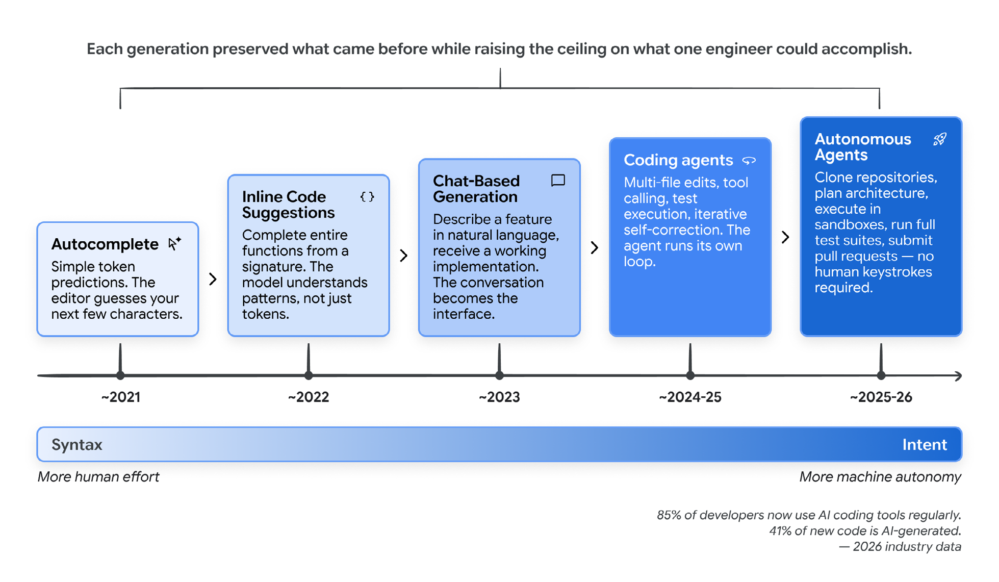
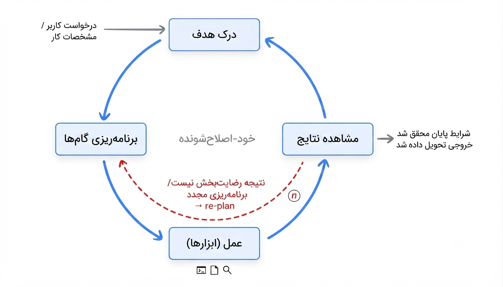
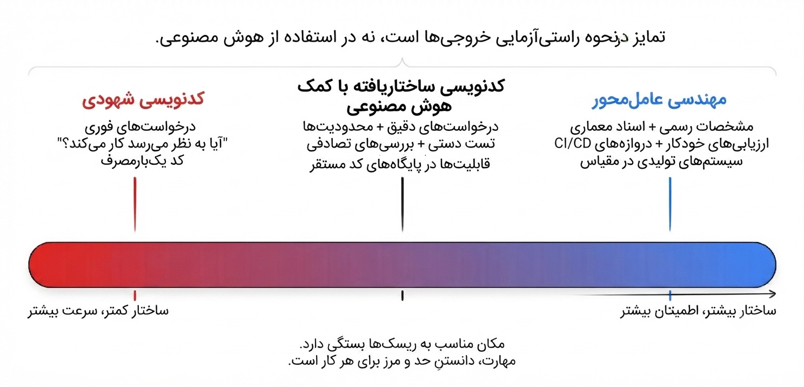
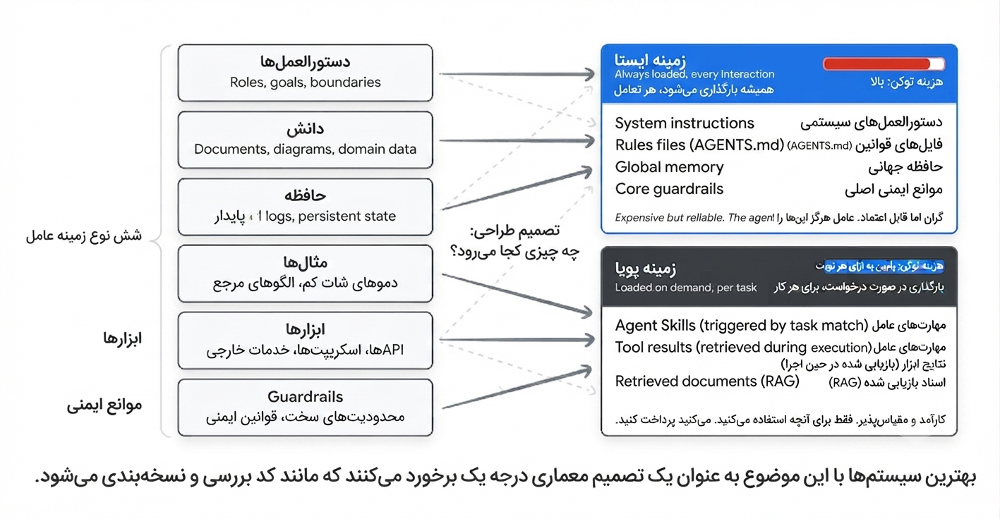
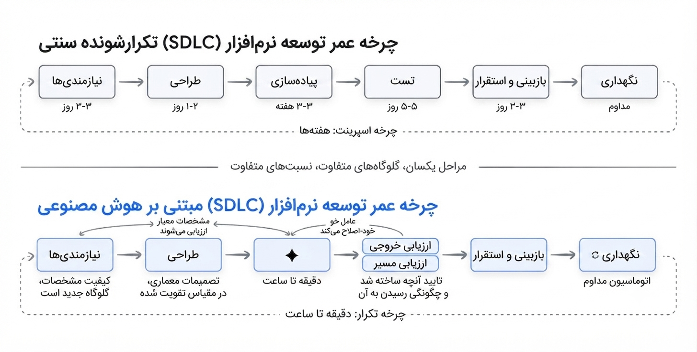
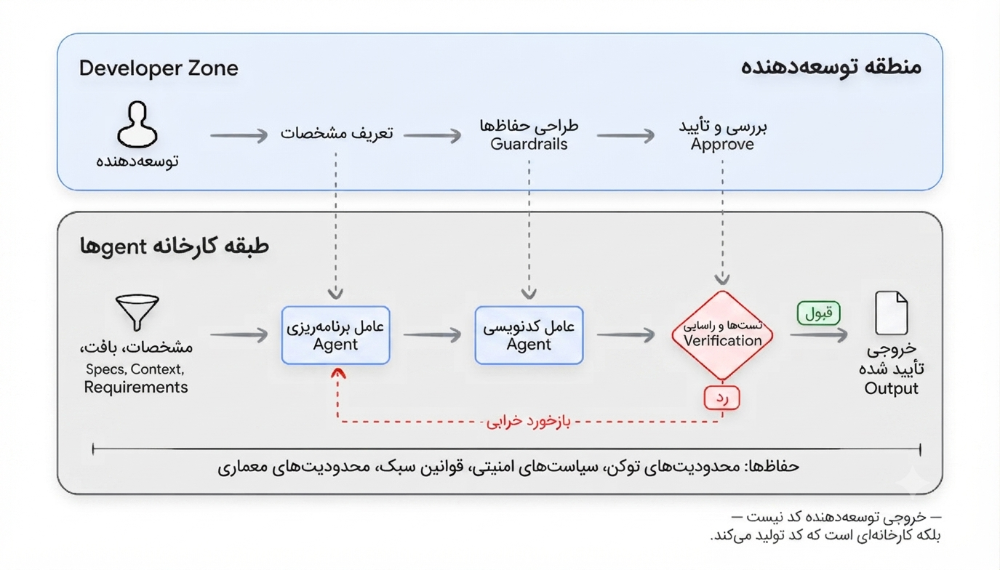
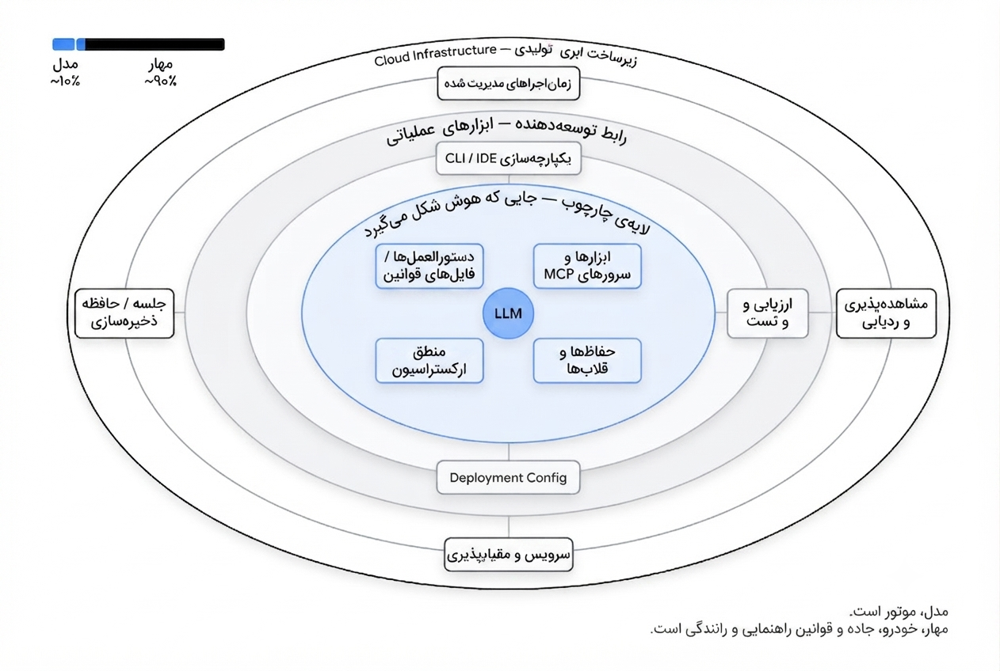
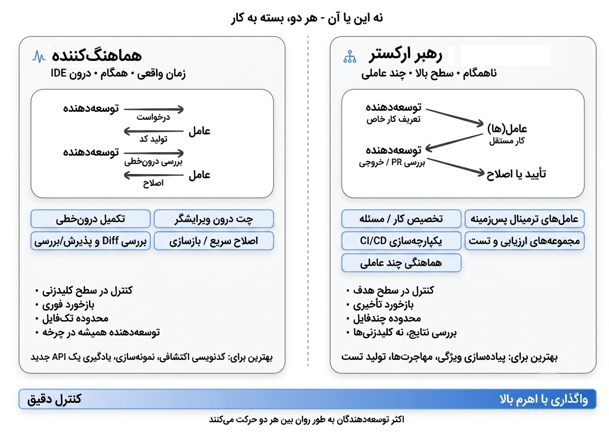
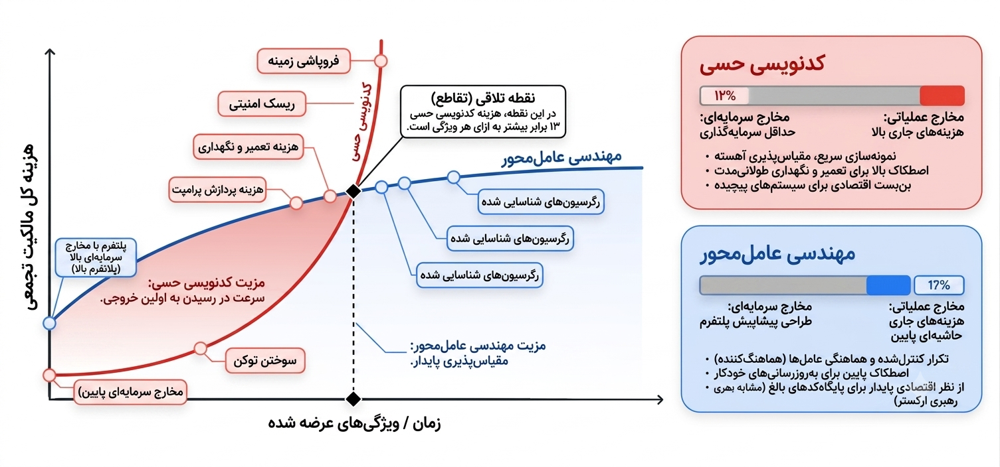

عمیقترین تغییر در مهندسی نرمافزار، زبان، فریمورک یا سرویس ابری جدید نیست؛ بلکه گذار از نوشتن کد به بیانِ قصد و اعتماد به سیستمهای هوشمند برای تبدیل آن قصد به نرمافزارِ کارآمد است.
مقدمه
در بیشتر تاریخ محاسبات، برنامهنویسی نوعی عمل ترجمه بوده است: درک مسئله به زبان انسانی، طراحی راهحل به زبان انتزاعی، سپس بیان آن به نحوی که ماشین بتواند اجرا کند. هر مرحله اصطکاک میآفریند. این اصطکاک اکنون در حال فروپاشی است. مهندسی نرمافزار مهمترین تحول خود را از زمان معرفی زبانهای برنامهنویسی سطح بالا پشت سر میگذارد.
برای دههها، رابط اصلی توسعهدهنده با ماشین، نحو (سینتکس) بوده است: آکولاد، نقطهویرگول، حاشیهنویسی نوع، و دستور زبان دقیق زبانهای برنامهنویسی. آن دوران رو به پایان است.
الگوی جدیدی از راه رسیده است: توسعهدهندگان بهجای آنکه بگویند چگونه میخواهند بسازند، بیان میکنند چه چیزی میخواهند بسازند و ماشین پیادهسازی را بر عهده میگیرد. انسان قصد، معماری و قضاوت را فراهم میکند. این آیندهای دور نیست — واقعیت روزانهی شمار فزایندهای از توسعهدهندگان حرفهای است. از اوایل سال ۲۰۲۶، ۸۵٪ توسعهدهندگان حرفهای بهطور منظم از عاملهای کدنویسی هوش مصنوعی استفاده میکنند، ۵۱٪ روزانه، و تخمین زده میشود ۴۱٪ کل کدهای جدید توسط هوش مصنوعی تولید میشوند.1
این تغییر یکشبه رخ نداد. ابتدا با تکمیل خودکار — پیشبینی سادهی توکن (token) در ویرایشگر — آغاز شد. سپس پیشنهادهای کد درونخطی آمدند که میتوانستند کل توابع را کامل کنند. بعد، رابطهای مبتنی بر چت به توسعهدهندگان اجازه دادند ویژگیها را به زبان طبیعی توصیف کنند و پیادهسازیهای کاربردی بگیرند. اکنون عاملهای کاملاً مستقل میتوانند مخازن را کلون کنند، تغییرات چندفایلی را برنامهریزی کنند، آنها را در محیطهای سندباکس (sandbox) اجرا کنند، تستها (test) را اجرا کنند و درخواستهای pull بفرستند — همهی اینها بدون آنکه انسان حتی یک خط کد تایپ کند.

پیامدهای این امر برای چرخه تولید نرمافزار عمیق است. هر مرحله — از گردآوری نیازمندیها تا دیپلوی و نگهداری — زیر تأثیر قابلیتهای هوش مصنوعی در حال بازشکلگیری است. اما این تحول یکنواخت یا ساده نیست. طیف آن از «کدنویسی شهودی» (vibe coding) معمولی — که در آن توسعهدهنده به هوش مصنوعی فرمان میدهد و هر چه برمیگردد را میپذیرد — تا «مهندسی عاملمحور» (agentic engineering) منظم کشیده میشود؛ جایی که هوش مصنوعی بهعنوان موتور پیادهسازی قدرتمند، درون سامانههایی با محدودیتها، تستها و حلقههای بازخوردِ دقیق طراحیشده عمل میکند و انسانها بر معماری، صحت و کیفیت نظارت دارند.
این تمایز مهم است. گفتن به مدیر ارشد فناوری که تیم شما سیستم پردازش پرداخت را با کدنویسی شهودی میسازد، زنگ خطر را به صدا درمیآورد — و باید هم چنین کند. گفتن به همان مدیر که تیم شما مهندسی عاملمحور را بهکار میگیرد — یعنی هوش مصنوعی پیادهسازی را زیر محدودیتهای طراحیشدهی انسان انجام میدهد و پوشش (coverage) تست صحت را تضمین میکند — اساساً گفتوگویی دیگر است.
این مقاله پایه و اساس این گفتگو را فراهم میکند. ما طیف وسیعی از کدنویسی شهودی روزمره تا مهندسی عاملمحورِ منظم را دنبال میکنیم، بررسی میکنیم که چگونه نقش توسعهدهنده از نوشتن کد به اعمال قضاوت - از رهبر ارکستر تا هماهنگکننده - تغییر میکند و توضیح میدهیم که برای بهکارگیری این ابزارها به شیوهای که نرمافزاری تولید کنند که واقعاً بتوانید به آن تکیه کنید، چه چیزی لازم است.
چرا این مقاله، چرا حالا
ابزارها، قابلیتها و الگوهای جدید هر هفته پدیدار میشوند. تیمهای مهندسی به چارچوبی برای فهم این چشمانداز نیاز دارند — نه تصویری لحظهای که ظرف چند ماه منسوخ شود، بلکه مجموعهای از اصول و مدلهای ذهنی که با تکامل ابزارهای خاص همچنان مفید بمانند.
این مقاله برای چه کسانی است؟
این مقاله برای مهندسان نرمافزار، مدیران مهندسی، معماران و رهبران فنی است که میخواهند بفهمند هوش مصنوعی چگونه چرخه تولید نرمافزار را بازشکل میدهد و این قابلیتهای جدید را بدون قربانیکردن انضباطی که نرمافزار تولیدی میطلبد، بهکار گیرند. فرض ما آشنایی با شیوههای مدرن توسعهی نرمافزار است، نه با جزئیات هوش مصنوعی یا یادگیری ماشین.
تغییر از نحو به قصد
پیش از ادامه، به تصویری مشترک از اینکه عامل چیست و کدنویسی شهودی واقعاً به چه معناست نیاز داریم. هر دو اصطلاح معانی انباشتهای یافتهاند که باید با دقت باز شوند.
عاملهای هوش مصنوعی: مروری سریع
عامل هوش مصنوعی سامانهای نرمافزاری است که هدفی را درک میکند، گامهایی برای رسیدن به آن برنامهریزی میکند، از راه ابزارها اقدام میکند، نتایج را مشاهده میکند و تا رسیدن به هدف یا شرط توقف، تکرار میکند. جایی که چتبات پاسخی میدهد و منتظر فرمان بعدی میماند، عامل حلقهی خودش را اجرا میکند: شما در آغاز هدفی میدهید؛ سپس در هر گام خود تصمیم میگیرد چه کند.

هر عامل، چه ساده و چه پیچیده، از پنج بخش ساخته شده است. گزارشی مقدماتی در نوامبر 2025 در مورد عاملها، هر یک بخشها را به طور کامل پوشش میدهد.۲ برای اهداف ما در اینجا، نسخه کوتاهشده زیر کفایت میکند:
- مدل، موتور استدلال است. زمینه فعلی را میخواند، تصمیم میگیرد که اتفاق بعدی چه باید باشد و فکر بعدی، فراخوان ابزار (tool call) بعدی یا پیام بعدی را تولید میکند.
- ابزارها مدل را به جهان متصل میکنند. آنها شامل APIهایی هستند که عامل میتواند آنها را فراخوانی کند، کدی که عامل میتواند آن را اجرا کند. پایگاههای دادهای که عامل میتواند از آنها پرسوجو کند، و سایر عاملهایی که عامل میتواند کار خود را به آنها محول کند.
- حافظه (memory) وضعیت است. به عامل اجازه میدهد تا تعاملات گذشته را به خاطر بیاورد، قوانین خاص پروژه را بازیابی (retrieval) کند و در طول جلسات زمینه را حفظ کند به طوری که هرگز از صفر شروع نشود.
- ارکستراسیون (orchestration) کدی است که حلقه را اجرا میکند. این کد، زمینه را برای هر فراخوانی مدل مونتاژ میکند، فراخوانیهای ابزار (tool) را ارسال میکند و نتایج آنها را ثبت میکند و تصمیم میگیرد که آیا ادامه دهد یا خیر.
- دیپلوی چیزی است که نمونه اولیه را به یک سرویس تبدیل میکند: میزبانی، ورود و صحت سنجی، پایش مصرف و زیرساختی که عامل روی آن اجرا میشود.
این چهار بخش در یک حلقه پیوسته با هم کار میکنند: ماموریت را درک کنید، صحنه را بررسی کنید، در مورد آن فکر کنید، اقدام کنید، مشاهده کنید و تکرار کنید. این حلقه قلب تپنده هر عامل است. هر چیز دیگری در این مقاله و هر چیز دیگری در بقیه دوره، نوعی از این حلقه است.
کدنویسی شهودی چیست؟
در فوریه ۲۰۲۵، آندره کارپاتی توضیحی از یک روش جدید برنامهنویسی منتشر کرد که به طور گسترده در جامعه مهندسی نرمافزار طنینانداز شد. او رویکردی را توصیف کرد که در آن «کاملاً تسلیم شهود میشوید، از پیشنهادها استقبال میکنید و فراموش میکنید که کد حتی وجود داشته»
در این حالت، توسعهدهنده آنچه را که میخواهد به زبان طبیعی توصیف میکند، خروجی هوش مصنوعی را میپذیرد و وقتی چیزی خراب میشود، پیام خطا را دوباره در اعلان کپی میکند و از هوش مصنوعی میخواهد که آن را برطرف کند.2
این اصطلاح به سرعت فراگیر شد زیرا چیزی واقعی را در بر میگرفت: بسیاری از توسعهدهندگان از قبل به این روش کار میکردند اما کلمهای برای آن نداشتند. در عرض چند ماه، «کدنویسی شهودی» به یک توصیف رایج برای هر گردش کار توسعه با کمک هوش مصنوعی تبدیل شد که خود باعث سردرگمی شد. آیا یک مهندس ارشد که از یک دستیار هوش مصنوعی برای پیادهسازی یک ویژگی کاملاً مشخص استفاده میکند، «کدنویسی شهودی» میکند؟ آیا تیمی که از عاملهای هوش مصنوعی برای اجرای یک معماری با دقت برنامهریزی شده استفاده میکند در حال «کدنویسی شهودی» هستند؟ این اصطلاح آنقدر گسترده به کار رفت که کمکم معنای خود را از دست داد.
در اوایل سال ۲۰۲۶، خود کارپاتی اذعان کرد که چارچوب اولیه بسیار محدود بوده است و اصطلاح «مهندسی عاملمحور» را برای توصیف انتهای منظمتر این طیف معرفی کرد.4
طیف: از کدنویسی شهودی تا مهندسی عاملمحور
به جای اینکه کدنویسی شهودی و مهندسی عاملمحور را به عنوان یک دوگانگی در نظر بگیریم، مفیدتر میدانیم که آنها را به عنوان نقاط پایانی یک طیف در نظر بگیریم. عامل تمایز کلیدی این نیست که آیا از هوش مصنوعی استفاده میکنید یا خیر، بلکه این است که چقدر ساختار، تأیید و قضاوت انسانی خروجی هوش مصنوعی را احاطه کرده است.
| بُعد | کدنویسی شهودی | کدنویسی ساختاریافته با کمک هوش مصنوعی | مهندسی عاملمحور |
|---|---|---|---|
| مشخصات (spec) نیت (intent) | دستورات زبانی طبیعی و روزمره | دستورات زبانی دقیق به همراه مثالها و ذکر محدودیتها | مشخصات رسمی، اسناد معماری، فایلهای وضعیت |
| معیار تأیید | «آیا به نظر میرسد کار میکند؟» | تست دستی، بررسی نقطهای | تستهای خودکار یکپارچهسازی، دروازههای (gate) CI/CD، داوران هوش مصنوعی |
| درک کدبیس | مینیمال؛ توسعهدهنده ممکن است کد تولید شده توسط هوش مصنوعی را نخواند | بررسی و مرور گزینشی مسیرهای بحرانی | بررسی جامع معماری؛ جزئیات پیادهسازی کد تولید شده توسط هوش مصنوعی ارائه میشود |
| مدیریت خطا | کپی-پیست؛ پیامهای خطا به خود هوش مصنوعی برمیگردند | تشخیصهای توسعهدهنده در مورد علت ریشهای خطا؛ هوش مصنوعی رفع مشکل را انجام میدهد | عاملها در محدودههای تعریفشده خود-عیبیابی انجام میدهند؛ انسانها مسائل معماری را حل میکنند |
| دامنه مناسب | نمونههای اولیه، اسکریپتها، کدبیسهای شخصی ایجاد شده، توسعه هکاتونها | توسعه ویژگیها درون سیستمهای از قبل تولید شده | سیستمهای تولید، توسعه در مقیاس تیم |
| نمایه ریسک | ریسک بالا؛ قابل قبول برای کد یکبار مصرف | ریسک متوسط؛ قضاوت انسانی برای تأیید در نقاط بازرسی کلیدی | ریسک پایین؛ تأیید سیستماتیک در هر مرحله |

جایگاه درست در این طیف به میزان ریسک بستگی دارد. یک نمونه اولیه آخر هفته میتواند صرفاً کدنویسی شهودی باشد. یک API تولیدی که تراکنشهای مالی را مدیریت میکند، نیازمند مهندسی عاملمحور است. بیشتر کارهای واقعی جایی بین این دو قرار میگیرند و مهارت این است که بدانیم مرز (boundary) هر کار را کجا باید تعیین کنیم.
بزرگترین وجه تمایز بین این دو انتها، نحوه تأیید خروجیها است. در کدنویسی شهودی، تأیید اختیاری است؛ توسعهدهنده کد را اجرا میکند و بررسی میکند که آیا درست به نظر میرسد یا خیر. در مهندسی عاملمحور، دو مکانیسم با هم کار میکنند. تستها بخشهای قطعی (deterministic) سیستم را تأیید میکنند: تابعی که این ورودی را دریافت میکند، آن خروجی را تولید میکند. ارزیابیها (evaluation) یا evalها، چرخه تولید نرمافزار جدید با کدنویسی شهودی را تأیید میکنند.
بخشهایی که قطعی نیستند: آیا عامل مسیر (trajectory) درست مراحل را طی کرده، ابزارهای مناسب را انتخاب کرده و پاسخ نهایی را مطابق با استاندارد کیفیت ارائه داده است؟ تستها توسط کد بررسی میشوند؛ ارزیابیها توسط مجموعه دادههای برچسبگذاری شده، معیارهای امتیازدهی و داوران هوش مصنوعی بررسی میشوند. بدون هر دو، عمل همیشه کدنویسی شهودی است، صرف نظر از اینکه دستورالعملها چقدر پیچیده هستند.
مهارت واقعی: مهندسی زمینه
با بالغ شدن این حوزه، یک بینش کلیدی پدیدار شده است: کیفیت کد تولید شده توسط هوش مصنوعی کمتر به هوشمندی دستورات شما و بیشتر به کیفیت زمینه ارائه شده بستگی دارد. این درک، مفهوم مهندسی زمینه را به وجود آورده است، عملی که در آن به عاملهای هوش مصنوعی اطلاعات غنی و ساختاریافتهای در مورد کدبیس، معماری، قراردادها و هدف شما ارائه میشود.5
توسعهدهندگان باید شش نوع اصلی از زمینه را در نظر بگیرند:
- دستورالعمل: نقش اصلی، اهداف و مرزهای عملیاتی عامل.
- دانش: اسناد بازیابی شده، نمودارهای معماری و دادههای خاص حوزه.
- حافظه: گزارشهای کوتاهمدت جلسات (آنچه اتفاق افتاده است) و وضعیت پایدار بلندمدت (پروژه چیست؟)
- مثالها: نمایشهای رفتاریِ کمتعداد و الگوهای مرجعِ کدبیس.
- ابزارها: تعاریف دقیق APIها، اسکریپتها و سرویسهای خارجی که عامل از آنها استفاده میکند و میتواند فراخوان دهد.
- گاردریلها (guardrail): محدودیتهای سخت، قوانین قالببندی و اعتبارسنجیهای ایمنی.
در تولید کد هوش مصنوعی، مهندسی زمینه شامل ایجاد تعادل دقیق بین اینکه عامل کدام یک از این شش عنصر را از قبل در اختیار دارد و کدام یک را میتواند بر اساس تقاضا بازیابی کند، میشود. این امر جدایی مهمی بین زمینه ایستا و پویا ایجاد میکند.
زمینه ایستا همیشه بارگذاری میشود: دستورالعملهای سیستم، فایلهای قانون (AGENTS.md، CLAUDE.md، GEMINI.md)، حافظه سراسری و تعاریف شخصیت. این زمینه تعریف میکند که عامل کیست و چگونه رفتار میکند. زمینه ایستا گران است زیرا هر توکن در هر تعامل، صرف نظر از ارتباط، وجود دارد.
زمینه پویا بر اساس تقاضا بارگذاری میشود: دستورالعملهای مهارتی که با تطبیق وظیفه فعال میشوند، نتایج ابزار که در حین اجرا بازیابی میشوند، اسنادی که از خطوط لوله RAG واکشی میشوند و تاریخچه جلسه پنجرهای. زمینه پویا کارآمد است زیرا عامل فقط زمانی که اطلاعات مورد نیاز است، هزینه توکن را پرداخت میکند.
تصمیم طراحی در مورد اینکه چه چیزی به زمینه ایستا در مقابل زمینه پویا تعلق دارد، یک بدهبستان مهندسی واقعی است. زمینه ایستای بیش از حد، توکنها را هدر میدهد و سیگنالها را ضعیف میکند. زمینه ایستای بسیار کم به این معنی است که عامل قوانین حیاتی را فراموش میکند. بهترین سیستمها تشخیص این مرز را به عنوان یک تصمیم معماری درجه یک درنظر میگیرند که مانند هر پیکربندی دیگری بررسی و نسخهبندی میشود.

قدرتمندترین الگو برای مدیریت زمینه پویا، مهارتهای عامل است: بستههای ساختاریافته و قابل حمل از «دانش فرآیند» که عامل فقط زمانی که وظیفه آن را ایجاب کند، بارگذاری میکند.
مهارتها به جای اینکه هر بخش از دانش تخصصی را در دستورالعمل سیستم (system prompt) عامل جاسازی کنند، به عامل اجازه میدهند تا یک متخصص عمومی سبک باقی بماند که بنا به تقاضا از طریق افشای تدریجی، به نقشهای تخصصی تبدیل میشود. عامل در هنگام راهاندازی فقط فرادادههای سبک را میبیند، وقتی یک وظیفه مطابقت دارد، دستورالعملهای کامل را بارگذاری میکند و فقط زمانی که صریحاً مورد نیاز باشد، مطالب مرجع عمیق را دریافت میکند. نتیجه این است که یک عامل میتواند دهها قابلیت تخصصی را حمل کند در حالی که هزینه توکن را فقط برای قابلیتی که به طور فعال از آن استفاده میکند، پرداخت میکند.
مهارتهای عامل (Agent Skills) به سرعت در بین عاملهای کدنویسی اصلی و پلتفرمهای سازمانی پذیرفته شدهاند، زیرا چهار مشکلی را که توسعه با عامل هوش مصنوعی را مختل کرده است، حل میکنند:
- خرابی محتوا به خاطر دستورات بیش از حد شلوغ
- عدم وجود حافظه فرایندی برای مدلهای زبانی
- سربار عملیاتی معماریهای چندعاملی
- نیاز به قابلیت حمل بین ابزارهای عامل و برندهای مختلف ارائهدهنده آنها
این بخش اصول اصلی مهندسی زمینه را معرفی کرد: شش نوع زمینهای که هر عامل به آن نیاز دارد، بدهبستان بین زمینه ایستا و پویا، و مهارتهای عامل به عنوان الگوی کلیدی برای مدیریت این بدهبستان در مقیاس بزرگ.
مقاله روز سوم در این مجموعه با عنوان «مهندسی زمینه: جلسات، مهارتها و حافظه» هر یک از این ایدهها را فراتر میبرد و نحوه طراحی و مدیریت جلسات، نوشتن و ارزیابی مهارتها، ایجاد حافظه پایدار در تعاملات و بهینهسازی مصرف توکن برای سیستمهای تولید را پوشش میدهد.
تغییر از «مهندسی دستورات prompt engineering » به «مهندسی زمینه context engineering» حقیقت عمیقتری را در مورد کار با هوش مصنوعی نشان میدهد. مدلها برای انجام درست کار، به همان زمینه مشابهی نیاز دارند که یک توسعهدهنده ماهر انسانی برای انجام خوب کار باید به آن دسترسی داشته باشد؛ و این از دستورالعملهای هوشمندانه مهمتر است. سوال این نیست که «چگونه هوش مصنوعی را برای نوشتن کد خوب فریب دهم؟» بلکه این است که «یک عضو جدید تیم برای مشارکت مؤثر باید چه چیزی بداند و چگونه آن دانش را به شکلی که هوش مصنوعی بتواند از آن استفاده کند، کدگذاری کنم؟»
مهندسی زمینه، پلی بین کدنویسی شهودی و مهندسی عاملمحور است. همچنین پلی بین این بخش و بخش بعدی است، جایی که به ساختاری که هر مدل را احاطه کرده و آن را مفید میسازد، نگاه میکنیم.
با تغییر تمرکزمان از نوشتن سینتکس به مهندسی این زمینه، تنگناهای موجود در تولید نرمافزار اساساً تغییر میکنند. ما دیگر منتظر دستهای انسان برای تایپ کلیشههای بیمعنی نیستیم؛ ما منتظر ذهن انسانها هستیم تا مرزها را تعریف کند. این امر مستلزم بازنگری کامل چرخه تولید نرمافزار سنتی است، زیرا سیستمهایی که ما برای ساخت نرمافزار استفاده میکنیم، اکنون سرعت تحویل آن را تعیین میکنند.
چرخه تولید نرمافزار جدید
چرخه تولید نرمافزار سنتی تحت فشار
چرخه تولید نرمافزار پیش از این یک تحول بزرگ را پشت سر گذاشته است. در طول دو دهه گذشته، اکثر شرکتها از فرآیندهای آبشاری متوالی به مدلهای تکرارشونده چابک روی آوردهاند: اسپرینتهای چابک، ادغام مداوم، خطوط لوله DevOps و چرخههای انتشار سریع. این تغییر، حلقههای بازخورد را کوتاهتر کرد، آزمایش را به توسعه نزدیکتر کرد و دیپلوی را به یک فرآیند مداوم به جای یک رویداد فصلی تبدیل کرد.
هوش مصنوعی این چرخه را به طرز چشمگیری فشرده میکند، اما به طور ناهموار: پیادهسازی که زمانی هفتهها طول میکشید، اکنون میتواند در چند ساعت انجام شود، در حالی که نیازمندیها، معماری و تأیید همچنان با سرعت انسانی انجام میشوند. نتیجه، نسخه سریعتری از چرخه تولید نرمافزار قدیمی نیست. این یک گردش کار متفاوت است، جایی که مرزهای بین فازها محو میشوند، چرخههای تکرار از هفتهها به دقیقهها کوتاه میشوند و نقش توسعهدهنده از مجری اصلی به طراح سیستم و داور (judge) کیفیت تغییر میکند.

نکتهای در مورد سرعت تغییر: تصویر مرحله به مرحلهای که در بالا توضیح داده شد، وضعیت چرخه تولید نرمافزار مبتنی بر هوش مصنوعی را تا اواسط سال 2026 نشان میدهد. این وضعیت به سرعت در حال تغییر است. نشانههای اولیه نشان میدهد که فشردهسازی فراتر از پیادهسازی گسترش خواهد یافت: تیمها در حال حاضر در حال آزمایش گردشهای کاری هستند که در آن توسعهدهندگان مستقیماً از مشخصات به بررسی میروند و عاملهای هوش مصنوعی در پسزمینه، پیادهسازی، آزمایش و دیپلوی را مدیریت میکنند. مرزهای ترسیم شده در این بخش ممکن است در 12 ماه آینده متفاوت به نظر برسند. آنچه ثابت خواهد ماند، قضاوت، سلیقه و مهارت انسانی برای تأیید خروجی هوش مصنوعی است، زیرا ماشینها بیشتر پیادهسازی را بر عهده میگیرند.
چگونه هوش مصنوعی هر مرحله را متحول میکند
نیازمندیها و برنامهریزی
نیازمندیها مرحلهای است که شکاف بین قصد و اجرا از نظر تاریخی بیشترین بوده است. تبدیل نیازهای تجاری به مشخصات فنی، فرآیندی دستی و مستعد خطا بوده است که شکاف مداومی بین آنچه ذینفعان میخواهند و آنچه مهندسان میسازند، ایجاد میکند.
ابزارهای مدرن هوش مصنوعی میتوانند مستقیماً در اصلاح نیازمندیها مشارکت کنند: تولید داستانهای کاربر از خلاصههای محصول، شناسایی موارد حاشیهای که انسانها از قلم میاندازند، تولید طرحوارههای API از توضیحات زبان طبیعی و تولید نمونههای اولیه تعاملی از اسناد مشخصات. محیطهای توسعه عاملمحور به توسعهدهندگان این امکان را میدهند که در عرض چند دقیقه از یک توصیف به یک نمونه اولیه کاربردی برسند و حلقه بازخورد نیازمندیها به نمونه اولیه را تقریباً به صفر برسانند.
نیازمندیها دیگر سندی نیستند که بین تیمها دست به دست شود. آنها به مکالمهای بین انسانها و هوش مصنوعی تبدیل میشوند که مشخصات و پیادهسازی اولیه را همزمان تولید میکند.
طراحی و معماری
معماری همچنان سرسختترین مرحله انسانمحور چرخه تولید نرمافزار است و دلیل خوبی هم برای این امر وجود دارد. تصمیمات معماری اساساً در مورد بدهبستانها هستند: سازگاری در مقابل در دسترس بودن، پیچیدگی در مقابل انعطافپذیری، ساخت در مقابل خرید. این بدهبستانها به زمینه کسبوکار، محدودیتهای سازمانی و ملاحظات استراتژیک بلندمدت بستگی دارند که هوش مصنوعی نمیتواند بهطور کامل آنها را درک کند.
هوش مصنوعی در اجرای تصمیمات معماری پس از اتخاذ آنها، بسیار عالی عمل میکند. با داشتن یک سند معماری واضح، عاملهای هوش مصنوعی میتوانند کل برنامهها را چارچوببندی کنند، الگوهای سازگار را در ماژولها ایجاد کنند و اطمینان حاصل کنند که کد جدید با قراردادهای تعیینشده مطابقت دارد. نقش توسعهدهنده از نوشتن کدهای تکراری به ساخت و مستندسازی تصمیمات ساختاری که کدهای تکراری پیادهسازی میکنند، تغییر میکند.
پیادهسازی
عاملهای کدنویسی مدرن میتوانند کل ویژگیها را از توصیفات زبان طبیعی تولید کنند، الگوریتمهای پیچیده را پیادهسازی کنند و تغییرات چند فایلی ایجاد کنند که به درستی با هم کار میکنند. افزایش بهرهوری واقعی است: بررسیهای صنعتی ۲۵ تا ۳۹ درصد بهبود بهرهوری را گزارش میکنند و برخی از وظایف شاهد افزایش بیشتری هستند.⁷
البته تصویر واقعی از آنچه اعداد نشان میدهند، تفاوت ظریفتری دارد. مطالعهای توسط METR نشان داد که توسعهدهندگان باتجربهای که از دستیاران هوش مصنوعی استفاده میکنند، در واقع ۱۹٪ بیشتر برای انجام وظایف خاص وقت صرف میکنند، که عمدتاً به دلیل زمانی است که صرف تأیید، دیباگ (debug) و اصلاح خروجی هوش مصنوعی میشود.⁸ هوش مصنوعی کار پیادهسازی را حذف نمیکند، بلکه آن را از نوشتن به بررسی، هدایت و تأیید تبدیل میکند.
تست و تضمین کیفیت
آزمایش کد تولید شده توسط هوش مصنوعی نه تنها نیازمند ارزیابی آنچه عامل تولید کرده است، بلکه مستلزم ارزیابی نحوه رسیدن آن به آنجا نیز میباشد. ارزیابی خروجی، مصنوع نهایی را بررسی میکند: آیا کد کامپایل میشود، آیا آزمایشها با موفقیت انجام میشوند؟ ارزیابی مسیر، توالی کامل فراخوانیهای ابزار و استدلال میانی را بررسی میکند. هر دو ضروری هستند زیرا یک خروجی روان که مراحل تأیید درونی را نادیده گرفته است، یک نقطه شکست خطرناکتر نسبت به خروجی با خطای قابل مشاهده است.
هوش مصنوعی همچنین خودِ تولید تست را متحول میکند. عاملها میتوانند موارد تست، از جمله تستهای موارد خاص و تستهای مبتنی بر ویژگی، را تولید کنند که ممکن است انسانها به آنها فکر نکنند. مهمتر از آن، تستها و ارزیابیها به مکانیسم اصلی برای انتقال هدف به عاملهای هوش مصنوعی تبدیل میشوند: یک مجموعه ارزیابی خوب نوشته شده به هوش مصنوعی میگوید که «صحیح» به چه معناست و یک روش خودکار برای تأیید آن ارائه میدهد.
این شیوهها زمانی بیشترین اثربخشی را دارند که به یک چرخهی کیفیت پیوسته متصل شوند: ارزیابی در مقایسه با یک مجموعهی معیار، تشخیص خرابیها با خوشهبندی علل ریشهای، بهینهسازی دستورالعملها یا ابزارهایی که باعث آنها شدهاند، تأیید اصلاحات در مقایسه با یک مجموعهی رگرسیون و نظارت بر ترافیک تولید برای حالتهای جدید خرابی. هر چرخه ترکیبی است.
بررسی کد و دیپلوی
خودِ فرآیند بررسی در حال تقویت است و هوش مصنوعی به عنوان یک بررسیکنندهی اولیه عمل میکند که میتواند اشکالات احتمالی، نقض سبک، آسیبپذیریهای امنیتی و مشکلات عملکردی را قبل از اینکه یک بررسیکنندهی انسانی کد را ببیند، شناسایی کند. این جایگزین بررسی انسانی نمیشود، زیرا تصمیمات وابسته به زمینه در مورد طراحی، قابلیت نگهداری و همترازی استراتژیک هنوز به قضاوت انسانی نیاز دارند، اما بار شناختی بررسیکنندگان را به میزان قابل توجهی کاهش میدهد.
خطوط لوله دیپلوی نیز در حال آگاه شدن از هوش مصنوعی هستند. عاملهای هوش مصنوعی میتوانند سلامت دیپلوی را رصد کنند، بهطور خودکار نسخههای مشکلساز را به حالت قبل برگردانند و خطرات دیپلوی را بر اساس ماهیت و دامنه تغییرات پیشبینی کنند. پلتفرمهای دیپلوی مدرن بهطور فزایندهای با قابلیت مشاهده مبتنی بر هوش مصنوعی ادغام میشوند تا حلقههای بازخوردی بین رفتار تولید و تصمیمات توسعه ایجاد کنند.
مقاله پنجم از این مجموعه به بررسی این موضوع میپردازد که وقتی حجم PR با خروجی عامل (Agent) افزایش مییابد، چه تغییراتی برای بررسیکنندگان انسانی ایجاد میشود - خلاصههای بستهبندیشده، LGTM شرطی، مهارتهای بررسی کد توسط عامل.
نگهداری و تکامل
شاید دستکم گرفتهشدهترین تحول، در حوزه نگهداری باشد. کدهای قدیمی که زمانی برای اعضای جدید تیم غیرقابل نفوذ بودند، اکنون میتوانند با کمک هوش مصنوعی پیمایش، درک و اصلاح شوند. یک عامل هوش مصنوعی میتواند یک کد را بخواند، الگوهای آن را درک کند، فایلهای مربوط به تغییر را شناسایی کند و اصلاحات را با رعایت معماری موجود اجرا کند.
این امر پیامدهای قابل توجهی برای بدهی فنی دارد. کدی که به دلیل اینکه فقط نویسندگان اصلی آن را میفهمیدند؛ «بسیار پرخطر برای دست زدن» تلقی میشد، اکنون میتواند با خیال راحت بازسازی، مدرنیزه و توسعه داده شود. عاملهای هوش مصنوعی میتوانند به طور سیستماتیک کدبیسها را بین چارچوبها منتقل کنند، APIهای منسوخ شده را بهروزرسانی کنند و مجموعههای تست را مدرنیزه کنند - کارهایی که قبلاً آنقدر خستهکننده و پرخطر بودند که هرگز اتفاق نمیافتادند.
مدل کارخانه: ساخت سیستمی که نرمافزار میسازد
مدل ذهنی که این تبدیلها را به هم پیوند میدهد، چیزی است که ما آن را مدل کارخانه مینامیم. در این مدل، خروجی اصلی توسعهدهنده کد نیست - بلکه سیستمی است که کد تولید میکند. این سیستم شامل موارد زیر است:
- مشخصات و زمینهای که تعریف میکند چه چیزی باید ساخته شود
- عاملهایی که مشخصات را به پیادهسازی تبدیل میکنند
- آزمایشها و گیتهای کیفیتی که صحت را تأیید میکنند
- حلقههای بازخورد که خطاها را برای اصلاح به اپراتورها برمیگردانند
- گاردریلهایی که عاملها را به رفتار ایمن و قابل پیشبینی محدود میکنند.
مدیر کارخانه هر ابزارک(widget) را با دست مونتاژ نمیکند. آنها خط مونتاژ را طراحی کرده و کنترل کیفیت را تضمین میکنند. توسعهدهنده مدرن، سیستم توسعه را طراحی میکند و تضمین میکند که خروجی آن مطابق با استاندارد مورد نیاز باشد. به جای ارائه دستورالعملهای گام به گام به عاملها و سپس اجازه دادن به آنها برای تکرار تا وقتی موفقیت حاصل شود؛ موفقیت از ارائه معیارهای موفقیت به عاملها حاصل میشود.

این موضوع سوالی را مطرح میکند که ادامهی این مقاله را پیش میبرد: دستگاه مرکزی در کارخانه چیست؟ خودِ عامل، یعنی چیزی که کار را در خط مونتاژ انجام میدهد، واقعاً چه شکلی است؟
اگر توسعهدهنده مدیر کارخانه باشد، مدل هوش مصنوعی صرفاً موتور خام در کارخانه است. یک موتور به تنهایی نمیتواند یک ماشین تولید کند؛ به تسمه، چرخدنده، حسگرهای ایمنی و خط مونتاژ نیاز دارد. در زمینه توسعه با کمک هوش مصنوعی، این ماشینآلات پیرامونی به عنوان مهار Harness شناخته میشوند.
مهندسی مهار: آنچه مدل را احاطه کرده است
مدل
وقتی سازندگان شروع به کار با عاملهای هوش مصنوعی میکنند، این وسوسه وجود دارد که با مدل به عنوان یک سیستم رفتار کنند. یک مدل جدید بیرون میآید، عامل هوشمندتر میشود. یک مدل قدیمیتر بیرون میآید و عامل بدتر میشود. مدل به توضیحی برای همه چیز خوب و بد تبدیل میشود.
این شهود اشتباه است و منجر به سرمایهگذاریهای اشتباه میشود. مدل، یکی از ورودیها به یک عامل در حال اجرا است. هر چیز دیگری، دستورالعملها، ابزارها، سیاستهای (policy) زمینهای، هوکها، سندباکسها، زیرعاملها، مشاهدهپذیری، مهار هستند: داربستی که دور مدل پیچیده شده و به آن اجازه میدهد واقعاً کاری را به پایان برساند.¹¹
یک معادله مفید:

یک مدل خام، یک عامل نیست. زمانی که یک مهار به آن امکان مدیریت وضعیت، اجرای ابزار، حلقههای بازخورد و محدودیتهای قابل اجرا میدهد، به یک عامل تبدیل میشود. رفتاری که توسعهدهندگان هنگام کار با Claude Code، Cursor، Codex، Antigravity، Aider یا Cline تجربه میکنند، تحت تأثیر کاری است که مهار انجام میدهد، نه فقط اینکه کدام مدل در زیر آن قرار دارد.

چه چیزی در مهار است؟
به طور مشخص، یک مهار شامل موارد زیر است:
- دستورالعملها و فایلهای قوانین: متنی که مشخص میکند عامل کیست، به چه چیزهایی اهمیت میدهد، و آنچه انجام آن ممنوع است. این شامل
AGENTS.md،CLAUDE.md،GEMINI.md، فایلهای مهارتی و دستورالعملهای مربوط به زیرعامل (subagent) است. - ابزارها: توابع، سرورهای MCP و APIهایی که عامل میتواند فراخوانی کند، به علاوهی نثر پیرامون آنها که به مدل میگوید چه زمانی و چگونه آنها را فراخوانی کند.
- سندباکسها و محیطهای اجرا: جایی که کد عامل واقعاً اجرا میشود و آنچه نمیتواند دسترسی پیدا کند و آنچه دسترسی دارد.
- منطق هماهنگسازی: ایجاد زیرعامل، مسیریابی مدل، تبادل اطلاعات بین متخصصان، و قوانینی که هنگام اجرای هر یک از آنها حاکم است.
- گاردریلها یا هوکها: کد تعیین شده که در نقاط چرخه عمر خاصی اجرا میشود: قبل از فراخوانی ابزار، بعد از ویرایش فایل، قبل از کامیت (commit). هوکها محل قرارگیری چیزهایی هستند که عامل باید هیچوقت فراموش نکند اما اغلب فراموش میکند.
- قابلیت مشاهده: گزارشها، ردیابیها، ارزیابیها، اندازهگیری هزینه و تأخیر (latency). بدون داشتن قابلیت مشاهده، هیچ راهی برای تشخیص اینکه آیا عامل خوب عمل میکند یا بیسروصدا در حال چرخیدن به دور خود است، وجود ندارد.
اگر این حجم از بخشها و جزئیات؛ زیاد به نظر میرسد، حق دارید، واقعاً زیاد است و این حوزه مسئولیت تیم توسعهدهنده است، نه شرکت ارائهدهنده مدل هوش مصنوعی.
مهار در چرخه تولید نرمافزار
در حالی که خود مدل نحوه انجام یک کار را تعیین میکند، مهار، داربستی است که دسترسی به ابزارها، سندباکسها و هماهنگی لازم برای اجرای آن را فراهم میکند. بنابراین، این مهار باید در هر مرحلهای که یک عامل هوش مصنوعی فعالیت میکند، وجود داشته باشد.
در اینجا نحوه عملکرد فعال این مهار در مراحل مختلف چرخه تولید نرمافزار جدید آورده شده است:
-
نیازمندیها، برنامهریزی و معماری (پیکربندی مهار)
اینجاست که مهار پیکربندی و کالیبره میشود. قبل از اینکه هوش مصنوعی هرگونه کد تولیدی را بنویسد، توسعهدهنده باید محیط عامل را تنظیم کند.
• پیکربندی مهار: ارائه دستورالعملها و فایلهای قانون (مثلاً ایجاد
AGENTS.mdو تعریف محدودیتهای معماری) که مهار بارگذاری کرده و در اختیار مدل قرار میدهد.• اقدام: توسعهدهنده ابزارهایی را که عامل به آنها دسترسی خواهد داشت (مانند موارد خاص APIها یا طرحهای پایگاه داده) و قوانین اساسی را که عامل نمیتواند نقض کند، تعیین میکند.
-
پیادهسازی (اجرای مهار)
در طول کدنویسی فعال، مهار به عنوان مرزی عمل میکند که مدل هوش مصنوعی را متمرکز، ایمن و پربازده نگه میدارد.
• اجزای مهار مورد استفاده: سندباکسها، محیطهای اجرا و ابزارها.
• اقدام: همزمان با تولید کد توسط مدل، آن را در محدوده ایزوله مهار اجرا میکند. اگر مدل نیاز به خواندن فایلی یا جستجو در وب داشته باشد، از ابزارهای ارائه شده توسط مهار استفاده میکند.
-
آزمایش و تضمین کیفیت (حلقه بازخورد)
آزمایش در یک گردش کار عاملمحور به شدت به مهار برای تسهیل خوداصلاحی خودکار متکی است.
• اجزای مهار مورد استفاده: منطق ارکستراسیون و گاردریلها.
• اقدام: وقتی عامل یک تابع مینویسد، مهار، اجرای آن را فراهم میکند. محیطی مانند یک ترمینال سندباکسشده که امکان اجرای تستهای خودکار را فراهم میکند. اگر تستی با شکست مواجه شود، منطق ارکستراسیون، خروجی خطا را از آن محیط ضبط کرده و آن را به مدل برمیگرداند و از آن میخواهد دوباره امتحان کند. مهار، چیزی است که این حلقه خودکار «فکر کردن -> عمل کردن -> مشاهده کردن» را ایجاد میکند.
-
بررسی کد، دیپلوی و نگهداری (مشاهدهی مهار)
حتی پس از نوشتن کد، این مهار است که تضمین میکند که عامل در محیطهای زنده یا نزدیک به زنده، ایمن رفتار کند.
• اجزای مهار مورد استفاده: هوک و قابلیت مشاهده.
• اقدام: مهار، هوکهای تعیینشده را اجرا میکند (مثلاً مسدود کردن یک کامیت در صورتی که عامل سعی میکند یک رمز عبور کدگذاری شده را وارد کند). علاوه بر این، لایه مشاهدهپذیری هزینههای توکن، تأخیر و انحراف (drift) عامل را ردیابی میکند و به مهندسان انسانی اجازه میدهد تا دقیقاً بررسی کنند که چرا یک عامل تصمیم دیپلوی خاصی را گرفته است.
گذار از «کدنویسی شهودی» به «مهندسی عاملمحور» صرفاً مربوط به ابزارهایی که استفاده میکنید نیست - یک توسعهدهنده میتواند با استفاده از همان عامل، کد شهودی بنویسد یا مهندسی عاملمحور را اعمال کند. در عوض، این گذار با نحوه پیکربندی و اعمال آگاهانه مهار توسط شما تعریف میشود. کدنویسی شهودی بر داربستبندی حداقلی یا ضمنی متکی است که صرفاً با هدف پیادهسازی سریع انجام میشود. مهندسی عاملمحور بر انتزاعات مهاربندی واضح و گستردهای متکی است که هوش مصنوعی را از اولین سند برنامهریزی تا نظارت بر تولید هدایت میکند.
تأثیر این پیکربندی آگاهانه، کاملاً قابل اندازهگیری است. معیارهای عمومی، اندازه اثر مهار را ملموس میکنند. در Terminal Bench 2.0، یک تیم با با ثابت نگاه داشتن مدل و تنها تغییر مهار، توانست رتبه یک عامل کدنویسی را از خارج از ۳۰ عامل برتر به درون ۵ عامل برتر منتقل کند. یک مطالعه جداگانه در LangChain با تنها تغییر در دستور (instruction) سیستم system prompt، ابزارها و میانافزار حول یک مدل ثابت، امتیاز یک عامل کدنویسی را ۱۳٫۷ امتیاز افزایش داد.
نسخه روزمره این مشاهده برای تیمهایی که هوش مصنوعی را در سراسر چرخه تولید نرمافزار به کار میگیرند، بسیار مهم است: وقتی یک عامل کار اشتباهی انجام میدهد، اولین واکنش غریزی سرزنش مدل است. اغلب، ریشه شکست به فقدان ابزار، یک قانون مبهم، فقدان یک گاردریل یا یک پنجره زمینه پر از نویز برمیگردد. اکثر شکستهای عامل، اگر صادقانه بررسی شوند، شکستهای پیکربندی هستند.
نقش در حال تکامل توسعهدهنده:
رهبران ارکستر و هماهنگکنندگان
همچنان که هوش مصنوعی بخش بیشتری از کار پیادهسازی را بر عهده میگیرد، نقش توسعهدهنده به شیوههایی که هم هیجانانگیز و هم گیجکننده هستند، تغییر میکند. به نظر ما مفید است که به دو حالتی که توسعهدهندگان به راحتی بین آنها حرکت میکنند فکر کنیم: رهبر ارکستر و هماهنگکننده.12

رهبر ارکستر: هدایت عملی و بلادرنگ
در حالت رهبر ارکستر، یک توسعهدهنده به صورت برنامهنویسی جفتی pair-programing، با هوش مصنوعی کار میکند. آنها هردو در ویرایشگر هستند و کد را میبینند، توسعهدهنده هوش مصنوعی را با دستورالعملها و اصلاحات راهنمایی میکند و کنترل دقیقی بر آنچه نوشته میشود، دارد. هوش مصنوعی ابزاری قدرتمند است، اما توسعهدهنده به طور فعال هر حرکت را هدایت میکند.
این حالت معمولاً هنگام کار بر روی منطق پیچیده، دیباگ مسائل دشوار یا کار در کدبیسهای ناآشنا که در آن توسعهدهنده باید هر تغییر را در حین انجام آن درک کند، استفاده میشود. ابزارهایی مانند GitHub Copilot، Gemini Code Assist، Cursor و Windsurf عمدتاً از طریق تکمیل درونخطی، رابطهای چت و قابلیتهای ویرایش درجا از این حالت پشتیبانی میکنند.
حالت رهبر ارکستر برای توسعهدهندگانی که از پیشینههای مهندسی سنتی میآیند، ملموستر است. این حالت حس درک و کنترلی را که بسیاری از مهندسان برای آن ارزش قائلند، حفظ میکند. اما خطر این است که میتواند به یک گلوگاه نیز تبدیل شود - اگر توسعهدهنده شخصاً هر ضربه کلید را هدایت کند، بهبود توان عملیاتی حاصل از هوش مصنوعی محدود است.
هماهنگکننده: ناهمگام، واگذاری چندعاملی
در حالت هماهنگکننده، توسعهدهنده در سطح بالاتری از انتزاع عمل میکند. آنها اهداف را تعریف میکنند، آنها را به عاملها اختصاص میدهند و نتایج را بررسی میکنند - اما کد را خط به خط مشاهده نمیکنند. عاملها ممکن است در پسزمینه، به صورت موازی، روی بخشهای مختلف یک کدبیس کار کنند. توسعهدهنده به صورت دورهای چک میکند، خروجی را بررسی میکند و اصلاحات لازم را انجام میدهد.
این حالت برای وظایف کاملاً تعریفشده مانند رفع اشکال، پیادهسازی ویژگیها در برابر الگوهای تثبیتشده، مهاجرتهای کدبیس و تولید تست معمول است. ابزارهایی مانند Jules گوگل، حالت عامل GitHub Copilot، عاملهای پسزمینه Cursor و Claude Code از این حالت از طریق اجرای وظیفه ناهمگام پشتیبانی میکنند و اغلب در محیطهای سندباکس با دسترسی کامل به ریپو، ابزارهای ساخت و مجموعههای تست کار میکنند.13
حالت هماهنگکننده به مجموعهای از مهارتهای متفاوت نیاز دارد. به جای تخصص عمیق در نحو و اصطلاحات زبانی، مهارتهای قوی در موارد زیر را میطلبد:
- مشخصات: تعریف وظایف به اندازهای دقیق که یک عامل بتواند آنها را بدون ابهام اجرا کند
- تجزیه (decomposition): شکستن وظایف بزرگ به واحدهای با اندازه مناسب برای اجرای عامل
- ارزیابی: ارزیابی سریع اینکه آیا خروجی عامل مطابق با استانداردهای کیفیت است یا خیر
- طراحی سیستم: طراحی محدودیتها، آزمایشها و حلقههای بازخوردی که مولد بودن عاملها را حفظ میکنند
مشکل ۸۰٪
یک چالش مداوم در توسعه با کمک هوش مصنوعی چیزی است که ما آن را مشکل ۸۰٪ مینامیم: عاملهای هوش مصنوعی میتوانند به سرعت تقریباً ۸۰٪ از کد را برای یک ویژگی تولید کنند، اما ۲۰٪ باقی مانده - موارد حاشیهای، مدیریت خطا، نقاط ادغام و نیازمندیهای دقیق صحت - نیازمند دانش زمینهای عمیقی است که مدلهای فعلی اغلب فاقد آن هستند.۱۴
ماهیت خطاهای هوش مصنوعی از اشتباهات ساده نحوی به شکستهای مفهومی موذیانهتر تکامل یافته است: فرضیات اشتباه در مورد منطق کسبوکار، عدم جستجوی شفافسازی در مورد نیازمندیهای مبهم، موارد حاشیهای از قلم افتاده و تصمیمات معماری که بارهای نگهداری بلندمدت نامحسوسی ایجاد میکنند. تشخیص این خطاها دقیقاً به این دلیل دشوارتر است که کد «درست به نظر میرسد» و حتی ممکن است از آزمایشهای اولیه عبور کند.
توسعهدهندگانی که به طور مؤثر از این چالش عبور میکنند، یک موضع خاص را اتخاذ میکنند: آنها از هوش مصنوعی برای آنچه در آن خوب است یعنی پیادهسازی سریع وظایف کاملاً مشخص؛ استفاده میکنند، در حالی که توجه خود را به آنچه هوش مصنوعی با آن دست و پنجه نرم میکند یعنی نیازمندیهای مبهم، بدهبستانهای معماری و تأیید صحت؛ معطوف میکنند. آنها سعی نمیکنند با پذیرش هر چیزی که هوش مصنوعی تولید میکند، سریعتر باشند. آنها سعی میکنند با تمرکز تخصص خود در جایی که بیشترین اهمیت را دارد، سریعتر باشند.
عبور مؤثر از این مشکل ۸۰٪ نیازمند بهکارگیری ابزار مناسب در مرحلهی مناسب کار است. توسعهدهندهای که به عنوان «رهبر ارکستر» عمل میکند، به مجموعهای از ابزارها نیاز دارد که با ابزارهایی که به عنوان «هماهنگکننده» عمل میکنند، متفاوت است. برای درک چگونگی نگاشت این حالتهای عملیاتی به گردش کار روزانه، باید چشمانداز فعلی عاملهای هوش مصنوعی را بر اساس استقلال و ادغام آنها دستهبندی کنیم.
عاملهای کدنویسی در عمل
توسعهدهندهای که امروزه یک عامل میسازد، بیشتر کارها را از طریق ترمینال، اغلب به زبان طبیعی، و اغلب با یک عامل کدنویسی دیگر که تایپ را انجام میدهد، انجام میدهد. این جدید است. یک سال پیش، همین کار به معنای چارچوبها، SDKها و کنسولهای ابری بود. الگوهایی که جایگزین آنها شدهاند، ارزش نامگذاری واضح را دارند، هم برای توسعهدهندهای که میخواهد در زمان خود از عاملهای کدنویسی استفاده کند و هم برای توسعهدهندهای که میخواهد عاملهای خودش را بسازد.
جایی که عاملهای کدنویسی در روز کاری توسعهدهنده جای میگیرند
عاملهای کدنویسی در کارهای روزمره در سه جا ظاهر میشوند. اکثر توسعهدهندگان از هر سه به طور همزمان استفاده میکنند.
در ویرایشگر: تکمیل درونخطی که همزمان با تایپ توسعهدهنده، خط بعدی را پیشنهاد میدهد. پنلهای چت که کد را درجا توضیح میدهند یا اصلاح میکنند. آگاهی از کل کدبیس در داخل ویرایشگر وجود دارد. اینجاست که اکثر افراد برای اولین بار با کدنویسی با هوش مصنوعی آشنا میشوند و در جریان کار قرار میگیرند. نمونههایی از آن عبارتند از GitHub Copilot، Cursor، Windsurf، JetBrains AI Assistant.
در ترمینال: عاملهای کدنویسی که توسعهدهنده از خط فرمان راهاندازی میکند، هدف را به زبان ساده به آنها میدهد و اجازه میدهد در سراسر کدبیس کار کنند. دسترسی کامل به سیستم فایل، ویرایشهای چند فایلی، امکان اجرای ابزارها و آزمایشها و تکرار بر اساس نتایج. اینجاست که امروزه کدنویسی شهودی به طور جدی اتفاق میافتد. نمونههایی از آن عبارتند از Antigravity CLI، Claude Code، Codex CLI، Open Code و Cline.
در پسزمینه: عاملهایی که یک وظیفه را میگیرند و به صورت خودکار در سندباکسهای ابری اجرا میشوند، اغلب برای ساعتها، و اغلب یک pull request را به عنوان خروجی تولید میکنند. توسعهدهنده آن را اجرا کرده، رها میکند و بعداً بررسی میکند. نمونههایی از آن شامل Google Jules، حالت عامل GitHub Copilot، عاملهای پسزمینه Cursor و عامل تخصصی AlphaEvolve گوگل برای طراحی الگوریتمهای پیشرفته است.
در عمل، یک «عامل درون ویرایشگر» زمانی به توسعهدهنده کمک میکند که در میانه نوشتن کد باشد و بدون خروج از جریان کدنویسی، به پیشنهادات، ویرایشهای سریع یا توضیحات نیاز داشته باشد. یک «عامل مبتنی بر ترمینال» برای کارهای چند فایلی، کاوش در کدبیسهای ناآشنا و وظایفی که در آنها عامل نیاز به اجرای کد و واکنش به آنچه مشاهده میکند دارد؛ مفید است. یک «عامل پسزمینه» برای وظایف کاملاً مشخص که توسعهدهنده میتواند در یک پاراگراف توضیح دهد و از آنها صرفنظر کند، مانند رفع یک اشکال شناخته شده، تولید یک مجموعه آزمایشی یا انتقال کد از یک چارچوب به چارچوب دیگر، مناسب است. یک توسعهدهنده اغلب از هر سه، در یک روز استفاده میکند.
نقطه شروع درست به وظیفه بستگی دارد، نه به اینکه کدام دسته در نردبان استقلال در بالاترین جایگاه قرار دارد.
عاملهای آماده تولید کدنویسی شهودی
هر چیزی که تا اینجا مورد بحث قرار گرفته، در مورد استفاده از عاملهای کدنویسی برای ساخت نرمافزار بوده است: نوشتن ویژگیها، رفع اشکالات، تولید تستها، اصلاح کد. اما چه اتفاقی میافتد وقتی چیزی که باید بسازید، خودش یک عامل باشد؟
یک ربات پشتیبانی مشتری که درخواستهای بازپرداخت را مدیریت میکند. یک دستیار تحقیقاتی که منابع را بررسی و گزارشهای مستند تولید میکند. یک ابزار داخلی که بر انطباق نظارت میکند و ناهنجاریها را نشان میدهد. اینها وظایفی نیستند که شما با یک عامل کدنویسی در ترمینال خود حل کنید. آنها محصولاتی هستند که به ابزارهای خاص خود، حافظه خاص خود، ارزیابی خاص خود و زیرساخت دیپلوی خاص خود نیاز دارند.
همان گردش کار مبتنی بر ترمینال که اسکریپتهای نمونه اولیه را تولید میکند، اکنون به این عاملهای تولید میرسد. ساخت، ارزیابی و دیپلوی یک عامل واقعی که در مقیاس بزرگ اجرا میشود، با حافظه پایدار، مدیریت و مشاهدهپذیری، از یک وظیفه چارچوب و کنسول ابری به چیزی تبدیل شده است که در همان ترمینال اتفاق میافتد، اغلب با صحبت با همان عامل کدنویسی که توسعهدهنده قبلاً از آن استفاده میکرد.
این گردش کار زمانی اهمیت پیدا میکند که سازنده به عاملی نیاز داشته باشد که به طور قابل اعتمادی برای کاربران واقعی اجرا شود: حافظه پایدار در طول جلسات، مجوزهای محدود روی ابزارها و دادهها، پوشش ارزیابی که رگرسیونها را قبل از ارسال دریافت میکند، قابلیت مشاهدهای که آنچه عامل واقعاً انجام داده است را ردیابی میکند. برای اسکریپتهای یکباره یا اتوماسیون شخصی، یک عامل کدنویسی معمولی کافی است؛ عامل مقصد است. برای عاملهایی که به کاربران واقعی در مقیاس بزرگ خدمترسانی میکنند، عامل محصول است و به زیرلایه نیاز دارد.
رابط خط فرمان عامل گوگل (Google's Agents CLI) حول این ایده ساخته شده است.¹⁴ این یک ابزار خط فرمان کوچک است که مجموعهای از مهارتها را برای ساخت Agentها در Google Cloud در خود جای داده است و مهمتر از همه، با هر عامل کدنویسی که توسعهدهنده ترجیح میدهد، Claude Code، Codex یا دیگری، کار میکند. پس از یک بار نصب، عامل کدنویسی هفت مهارت جدید را که چرخه عمر کامل ADK را پوشش میدهد، کسب میکند: چارچوببندی یک پروژه، نوشتن کد عامل، ارزیابی آن، دیپلوی آن در Agent Runtime و ایجاد قابلیت مشاهده. توسعهدهنده SDK جدیدی یاد نمیگیرد. آنها آنچه را که میخواهند توصیف میکنند و عامل کدنویسی از مهارتها برای انجام کار درست در هر مرحله استفاده میکند.
به طور مشخص، کل حلقه ساخت-ارزیابی-دیپلوی به این شکل است:
# راهاندازی یکباره
راهاندازی uvx google-agents-cli
# سپس در عامل کدنویسی خود:
> یک عامل پشتیبانی بسازید که به سوالات موجود در اسناد ما پاسخ دهد.
> آن را روی مجموعه دادههای سوالات متداول ارزیابی کنید
> آن را در Agent Engine مستقر کنیدپشت آن دستورالعمل واحد، عامل کدنویسی، پروژهای را از روی یک الگو، چارچوببندی میکند، کد ADK را مینویسد، یک مجموعه ارزیابی (evalset) تولید میکند، آن را روی عامل اجرا میکند، در Agent Runtime مستقر میکند و گزارش میدهد. برای توسعهدهندگانی که ترجیح میدهند مستقیماً رانندگی کنند، همان عملیات به صورت دستورات ساده CLI (agents-cli create، agents-cli playground، agents-cli eval، agents-cli deploy) در دسترس هستند.
پیش از این، عاملهای تولید به یک پشته و گردش کار جداگانه از نمونههای اولیه نیاز داشتند. اکنون نمونه اولیهای که دیروز روی لپتاپ توسعهدهنده اجرا میشد، میتواند بدون بازنویسی، به عامل تولید تبدیل شود که امروز به کاربران واقعی خدمترسانی میکند.
همین گردش کار از یک عامل تا چندین عامل قابل تغییر است. ADK گردشهای کاری مبتنی بر گراف، گردشهای کاری چندعاملی را برای ساخت عاملهای مشارکتی و مکانیسمهای تعاملی مانند وضعیت جلسه مشترک، واگذاری مبتنی بر LLM و فراخوانی صریح ارائه میدهد که در هر الگوی چندعاملی متناسب با مسئله ترکیب میشوند.
هماهنگی بین عاملها از طریق وضعیت جلسه مشترک برای موارد ساده، از طریق پروتکل زمینه مدل (MCP) برای دسترسی به ابزار و از طریق پروتکل Agent2Agent (A2A) برای واگذاری متقابل عاملها انجام میشود.¹5 تیم مهندسی آنتروپیک آزمایشی را در اوایل سال 2026 منتشر کرد که در آن تیمهای عامل که روی این نوع معماری کار میکردند، یک کامپایلر C کارآمد در چرخه تولید نرمافزار جدید با کدنویسی شهودی ساختند.
Rust طی دو هفته، با تعیین مسیر توسط انسانها و بررسی خروجیها اما ننوشتن پیادهسازی.¹6 تنگنا از نوشتن کد به مشخص کردن کاری که باید انجام دهد و تأیید انجام آن توسط عاملها تغییر کرد.
برای سازندگان، مفهوم عملی آن ساده است. همان گردش کار کدنویسی شهودی که امروز یک اسکریپت تولید میکند، فردا یک عامل تولید تولید میکند. چرخه حیات، ساخت، ارزیابی، دیپلوی، مشاهده، اصلاح، در یک مکان قرار دارند. مسیر از ایده تا عامل اجرا از هفتهها به ساعتها کاهش یافته است و اکنون بیشتر کارها به زبان طبیعی انجام میشود.
شیوههایی که این گردش کار را در مقیاس تیمی به سطح تولید میرسانند، از توسعه مبتنی بر مشخصات و بررسی ساختاریافته کد گرفته تا گاردریلها، سندباکسینگ و توسعه بدون اعتماد، در مقاله همراه روز پنجم با عنوان «توسعه مبتنی بر مشخصات در سطح تولید در عصر کدنویسی شهودی» پوشش داده شدهاند.
اقتصاد توسعه هوش مصنوعی
هنگام ارزیابی تأثیر هوش مصنوعی بر چرخه تولید نرمافزار، گفتگو اغلب با سرعت توسعهدهنده شروع و پایان مییابد: چقدر سریع میتوانیم کد بنویسیم؟ با این حال، برای رهبران مهندسی، معیار حیاتیتر، کل هزینه مالکیت (TCO) است.
برای درک هزینه واقعی توسعه مبتنی بر هوش مصنوعی، باید بررسی کنیم که چگونه گردشهای کاری مختلف، بار مالی و عملیاتی را بین هزینههای سرمایهای (CapEx) - سرمایهگذاری اولیه برای ساخت چیزی - و هزینههای عملیاتی (OpEx) - هزینههای جاری برای اجرا، تعمیر و نگهداری آن - جابجا میکنند. نکته مهم این است که در عصر هوش مصنوعی، هزینههای عملیاتی به شدت توسط اقتصاد توکن تعیین میشود.

بدهی پنهان کدنویسی شهودی (سرمایه کم، هزینه عملیاتی بالا)
در نگاه اول، کدنویسی شهودی فوقالعاده مقرونبهصرفه به نظر میرسد. مانع ورود اساساً صفر است: یک اشتراک ماهانه استاندارد برای یک دستیار هوش مصنوعی و چند دستورالعمل ساده. CapEx ناچیز است زیرا توسعهدهنده کاملاً به قابلیتهای پایه مدل متکی است تا اینکه زمان خود را صرف طراحی سیستم کند.
با این حال، اقتصاد کدنویسی شهودی یک بار عملیاتی عظیم و پیچیده را پنهان میکند:
- نرخ سوختن توکن: هر تعامل با یک مدل زبان بزرگ (LLM) متحمل ... میشود. هزینه بر اساس توکنهای ورودی و خروجی. در کدنویسی شهودی، توسعهدهندگان اغلب مقادیر هنگفتی را dump میکنند، فایلهای بدون ساختار را در پنجرهی زمینه قرار میدهد و بارها از مدل میخواهد که خودش را اصلاح کند اشتباهات تایید نشده. این یک "حلقه اعلان" پرهزینه ایجاد میکند که از طریق API مصرف میشود. توکنهایی با نرخ موفقیت پایین در اولین عبور.
- مالیات بر نگهداری: کدی که از طریق دستورالعملهای موردی نوشته میشود، اغلب فاقد ساختار است. ثبات. وقتی شش ماه بعد یک اشکال پیش میآید، مهندسان انسانی باید روزها وقت صرف کنند مهندسی معکوس کد «اسپاگتی» بدون ساختار تولید شده توسط هوش مصنوعی.
- اصلاح امنیتی: بدون مهار ارزیابی خودکار، تولید سریع کد منجر به تولید سریع آسیبپذیریها میشود. هزینه رفع یک نقص امنیتی در تولید به صورت تصاعدی بالاتر از صید آن در مرحله طراحی است.
سرمایهگذاری مهندسی عاملمحور (سرمایهگذاری بالا، هزینههای عملیاتی پایین)
مهندسی عاملمحور این مدل اقتصادی را وارونه میکند. این مدل نیازمند یک سرمایهگذاری آگاهانه و از پیش تعیینشده در زمان و منابع مهندسی قبل از تولید حتی یک خط کد تولید است.
هزینه سرمایه (CapEx) در مهندسی عاملمحور شامل طراحی طرحهای API، ساخت مجموعههای تست قطعی و از همه مهمتر، ساختاردهی زمینه عامل است. در حالی که این هزینه اولیه بالاتر است، هزینه نهایی ارسال و نگهداری یک ویژگی به طرز چشمگیری کاهش مییابد. هوش مصنوعی در یک "کارخانه" کاملاً تحت نظارت عمل میکند، به این معنی که خروجی آن از نظر ساختاری سالم، از قبل آزمایش شده و مطابق با استانداردهای شرکت است.
مهندسی زمینه به عنوان یک اهرم مالی
در اقتصاد توکن، مهندسی زمینه فقط یک مهارت فنی نیست - بلکه یک استراتژی مالی است. LLM ها برای هر اطلاعاتی که برایشان ارسال میکنید، هزینه دریافت میکنند. ارسال کل یک ریپو (repository) ۱۰۰۰۰ توکنی به هر درخواست، از نظر مالی در مقیاس بزرگ، مقرون به صرفه نیست.
مهندسی زمینه مؤثر تضمین میکند که مدل، یک بار داده متراکم و با سیگنال بالا (مانند یک فایل دقیق AGENTS.md و محافظهای معماری) را به جای یک بار داده پراکنده و پر سر و صدا دریافت کند. با ارائه زمینه مناسب از قبل، توسعهدهندگان به طور چشمگیری میزان موفقیت عامل را در اولین مرحله افزایش میدهند و از حلقههای پرهزینه تست و خطا که کدنویسی شهودی را مختل میکنند، اجتناب میکنند.
افزایش بهرهوری از طریق زمینه و مهارتهای پویا
برای بهینهسازی واقعی OpEx، مهندسی عاملمحور پیشرفته از طریق استفاده از «مهارتها» یا فراخوانی ابزار (مانند سرورهای پروتکل Model Context) به زمینه پویا متکی است که در مقاله روز سوم به تفصیل به آن خواهیم پرداخت.
مسیریابی مدل هوشمند
علاوه بر این، مهندسی عاملمحور امکان مسیریابی هوشمند مدل را فراهم میکند. در یک گردش کار کدنویسی شهودی، یک توسعهدهنده معمولاً برای هر تعامل به یک مدل مرزی واحد و عظیم متکی است - فقط برای اینکه از هوش مصنوعی بخواهد یک غلط املایی را اصلاح کند یا یک تست واحد اولیه ایجاد کند، قیمتهای توکن پریمیوم را پرداخت میکند.
یک مدل کارخانهای که به خوبی طراحی شده باشد، از این اتلاف جلوگیری میکند. این مدل از مدلهای بزرگ و پیشرفته برای وظایف بسیار پیچیده (نیازمندیها، معماری و پیادهسازی اولیه) استفاده میکند، اما به طور خودکار وظایف قطعی و کمپیچیدگیتر (تولید تست، بررسی کد و نظارت بر CI/CD) را به مدلهای کوچکتر، سریعتر و به طور قابل توجهی ارزانتر هدایت میکند. با هماهنگسازی یک اکوسیستم چند مدلی، تیمهای مهندسی میتوانند کیفیت خروجی را در بالاترین سطح حفظ کنند و در عین حال به طور سیستماتیک هزینه توکن عملیاتی را کاهش دهند.
از کجا شروع کنیم
تغییر از نحو به قصد، یک وضعیت آینده نیست. این کار، کاری است که امروز پیش روی ماست. چه این متن را به عنوان یک سازندهی مستقل بخوانیم و چه به عنوان رهبری که به چگونگی پذیرش این ابزارها توسط یک تیم یا سازمان فکر میکند، اصل اساسی یکسانی برقرار است: هوش مصنوعی، فرهنگ مهندسیای را که در آن قرار میگیرد، تقویت میکند. شیوههای زیر این اصل را به عمل تبدیل میکنند.
برای توسعهدهندگان انفرادی
- یک فایل AGENTS.md (یا معادل آن) برای پروژه تنظیم کنید. قراردادی را که مطابقت دارد انتخاب کنید. عامل کدنویسی مورد نظر. با ده خط شروع کنید: پشته، قراردادها، قوانین سخت، گردش کار. هر بار که عامل کاری را انجام میدهد که نباید دوباره انجام دهد، یک قانون اضافه کنید.
- مجموعهای از مهارتها را برای عاملهای کدنویسی خود (مانند Agents CLI) نصب کنید تا بتوانند بسازند، ارزیابی کنند، مستقر کنند و بهینه سازی عامل ها.
- یک گردش کار تکراری انتخاب کنید و آن را به عنوان اولین عامل قرار دهید. یک گردش کار تحقیقاتی، یک کد فرآیند بررسی، یک گزارش تکرارشونده، یک قطعه محتوا که مرتباً تولید میشود. از کدنویسی استفاده کنید عامل نمونه اولیه را ایجاد کنید و آن را از طریق Agents CLI به یک عامل تولید تبدیل کنید. ساختن یک عامل از ابتدا تا انتها، چیزهای بیشتری از خواندن حدود صد عامل به ما میآموزد.
- قبل از تولید کد، تستها و ارزیابیها را بنویسید. اینها با هم قرارداد را تشکیل میدهند. با هوش مصنوعی. یک مجموعه تست و ارزیابی که به خوبی نوشته شده باشد، هدف را دقیقتر از ... منتقل میکند. هر گونه پرامپت (prompt) زبان طبیعی، و توسعه با کمک هوش مصنوعی را از کدنویسی شهودی به مهندسی عاملمحور.
- هر خطی که عامل تولید میکند و قرار است ارسال شود را بررسی کنید. نسبت به هر چیزی شکاک باشید. هوشمندانه به نظر میرسد. ورودیها را برای بستههای واقعی بررسی کنید. تأیید کنید که مدیریت خطا را پوشش میدهد. حالتهای خرابی واقعبینانه. کدی که تیم آن را نمیفهمد، هزینه دیباگ میشود. تیم توانایی پرداخت هزینهها را ندارد.
- مهارتهای توسعهدهنده خود را حفظ کنید. هوش مصنوعی روال کار را مدیریت میکند تا توسعهدهنده بتواند روی آن تمرکز کند. چالش برانگیز. این ترتیب فقط در صورتی کار میکند که مهارتهای اساسی، دیباگ، سیستم طراحی، شهود برای عملکرد و صحت، تیزبین باشید. با هوش مصنوعی به عنوان راهی برای اعمال رفتار کنید تخصص در مقیاس بزرگتر، نه به عنوان جایگزینی برای آن. تمرین منظم با پیچیدگی دیباگ، بررسی کد خروجی هوش مصنوعی و بحثهای مربوط به معماری همچنان ضروری هستند. به عنوان یک مهندس در حال رشد است.
برای رهبران مهندسی
- مهندسی زمینه را به یک روش مهندسی درجه یک در تیم تبدیل کنید. AGENTS.md، اعلانهای سیستم، مجموعههای ارزیابی و کتابخانههای مهارت به عنوان کد: بررسی شده در pull درخواستها، نسخهبندیشده با پروژه، متعلق به مهندسان نامبرده. بدون این نظم، مهار از بین میرود و رفتار عامل در سراسر تیم غیرقابل تکرار میشود.
- معیار را روی ارزیابی قرار دهید، نه روی نسخه آزمایشی. یک نسخه آزمایشی کارآمد ثابت میکند که یک عامل میتواند موفق شود. یک بار. یک مجموعه ارزیابی موفقیتآمیز، موفقیت قابل اعتمادی را ثابت میکند. اما یک ارزیابی بدون یک عنوان مشخص. چیزی را اندازهگیری نمیکند. آنچه را که امتیاز میدهید تعریف کنید: موفقیت در کار، کیفیت استفاده از ابزار، مسیر پیشرفت انطباق، توهم (hallucination) و کیفیت پاسخ. نیاز به پوشش ارزیابی با موارد صریح روبریکها به عنوان پیششرط برای هر عاملی که به یک گردش کار مشترک منتقل میشود، به همان روش تست پوشش، دیپلوی سرویس را مسدود میکند.
- بررسی کد را برای کد تولید شده توسط هوش مصنوعی تغییر شکل دهید. کد تولید شده توسط هوش مصنوعی نیاز به بررسی دقیقتر یا مشابه کد نوشته شده توسط انسان، با توجه بیشتر به توهمات وابستگیها، مدیریت ناکافی خطا، و شکافهای ظریف در صحت که درست به نظر میرسند در یک نگاه. بررسیکنندگان را در مورد حالتهای خرابی کد تولید شده آموزش دهید و بررسی را تنظیم کنید. چک لیست ها بر این اساس.
- کار نمونهسازی اولیه را از کار تولید در هنجارهای تیمی متمایز کنید. کدنویسی شهودی سرعت مناسب برای اکتشاف. مهندسی عاملمحور، رشتهی مناسبی برای تولید است. مرز صریح: کدام پروژهها، کدام شاخهها، کدام محیطها کدام را ایجاب میکنند نحوه کار. تیمهایی که این تمایز را مبهم نگه میدارند، نمونههای اولیهای تولید میکنند که ارسال میشوند تصادفاً.
- روی اجزای مهار به عنوان یک دارایی مشترک تیمی سرمایهگذاری کنید. سیستم قابل استفاده مجدد اعلانها، کتابخانههای مهارت، اتصالات سرور MCP و مهارهای ارزیابی در سراسر پروژهها. با آنها به عنوان زیرساخت رفتار کنید: مستندسازی، نگهداری و بهبود یابند عمداً. تیمهایی که بیشترین ارزش را از توسعه با کمک هوش مصنوعی به دست میآورند، عبارتند از آنهایی که یک بار مهار خود را میسازند و بارها آن را اصلاح میکنند.
برای سازمانها
- توسعه مبتنی بر هوش مصنوعی را به عنوان یک سرمایهگذاری مهندسی در نظر بگیرید، نه یک سرمایهگذاری بهرهوری ویژگی. تیمهایی که بیشترین سود را میبرند، ابزار هوش مصنوعی را با پوشش ارزیابی ترکیب میکنند، قابلیت مشاهده و استانداردهای معماری واضح. ارائه یک عامل کدنویسی بدون آن داربستبندی سرعت را بدون کیفیت تولید میکند، که سریعتر به بدهی فنی تبدیل میشود از هر تیمی که بتواند آن را پرداخت کند.
- قبل از تولید انبوه، روی بستر تولید سرمایهگذاری کنید. یک نمونه اولیه کدنویسی شهودی روی لپتاپ یک سیستم تولید نیست. آنچه یکی را به دیگری ارتقا میدهد، نظم عملیاتی است. پیرامون آن: ارزیابیهای مسیر و پاسخ نهایی که در CI اجرا میشوند، ردپای هر عامل اجرا شده، و محدودهبندی شده مجوزها به ازای هر عامل، و بررسی امنیتی تنظیمشده با حالتهای خرابی کد تولیدشده. این بستر را قبل از ارسال اولین عامل تولید، نه بعد از آن، بسازید.
- اتخاذ استانداردهای باز برای ابزارها و ارتباطات بین عاملی. مدلسازی زمینه پروتکل (MCP) برای دسترسی به ابزار و Agent2Agent (A2A) برای واگذاری بین عاملها همگرا شدن به زمینه همبند سیستمهای چندعاملی. انتخاب آنها در حال حاضر ادامه دارد گزینه ترکیب فروشندگان و چارچوبهای باز، و جلوگیری از تغییر پلتفرم در آینده.
- برای تیمهای ترکیبی از انسانها و عاملها برنامهریزی کنید، نه فقط انسان یا فقط عامل قویترین نتایج تولید در سال گذشته از معماریها حاصل شده است. جایی که انسانها مسیر را تعیین میکنند، عاملها پیادهسازی را انجام میدهند و پروتکلهای انتقال را شفاف میکنند مرزها را مدیریت کنید. فرآیندهای بررسی کد، چرخشهای کاری در حین انجام وظیفه و ساختارهای تیمی، همگی باید تکامل یابند تا نشان دهند که عاملها اکنون مشارکتکننده هستند، نه فقط ابزار.
- استخدام و توسعه مهارت را حول محور قضاوت، نه فقط اجرا، تغییر دهید. همچنان که پیادهسازی سریعتر و خودکارتر میشود، گلوگاه به ... تغییر میکند. تعیین مشخصات، ارزیابی، قضاوت معماری و بررسی. برای آنها استخدام و توسعه دهید مهارتها را عمداً. ارزشمندترین مهندسان در چند سال آینده، مهندسانی خواهند بود کسانی که میتوانند به خوبی عاملهای را هدایت کنند، نه کسانی که میتوانند بیشترین کد را بنویسند.
نتیجهگیری: قصد به عنوان رابط جدید
گذار از نحو به قصد، پیشبینی آینده نیست - این یک واقعیت کنونی است. توسعهدهندگان در حال حاضر زمان بیشتری را صرف توصیف آنچه میخواهند میکنند تا مشخص کردن نحوه ساخت آن. چرخه تولید نرمافزار در حال حاضر در حال فشردهسازی، بازسازی و بازطراحی پیرامون قابلیتهای هوش مصنوعی است. سوال این نیست که آیا این تحول اتفاق خواهد افتاد یا خیر، بلکه این است که توسعهدهندگان، تیمها و سازمانها تا چه حد به طور مؤثر آن را هدایت خواهند کرد.
چارچوبی که در این مقاله ارائه کردهایم - طیفی از کدنویسی شهودی تا مهندسی عاملمحور، مدل نقشهای توسعهدهنده از رهبر ارکستر تا هماهنگکننده، طبقهبندی عاملهای محیطی، گردش کار و خودمختار، و مدل کارخانهای تولید نرمافزار - مجموعهای از مدلهای ذهنی را برای درک چشماندازی که به سرعت در حال تحول است، فراهم میکند. این مدلها حتی با تکامل ابزارها و قابلیتهای خاص، مفید باقی خواهند ماند.
سه اصل به عنوان اصول پایدار برجسته هستند:
- ساختار مقیاس دارد، شهود نه. کدنویسی شهودی یک رویکرد معتبر برای کاوش است، نمونهسازی اولیه و پروژههای شخصی. اما برای نرمافزاری که سازمانها به آن وابسته هستند، رشته مهندسی عاملمحور - مشخصات، آزمایشها، نردههای محافظ و نظارت انسانی از معماری - اختیاری نیست. شکاف بین «به نظر میرسد کار میکند» و «کار میکند» به درستی تحت هر شرایطی" جایی است که قطع تولید، آسیبپذیریهای امنیتی و کابوسهای تعمیر و نگهداری زنده.
- هوش مصنوعی فرهنگ مهندسی شما را تقویت میکند. سازمانهایی با شیوههای تست قوی، واضح و شفاف استانداردهای معماری، و فرآیندهای بررسی کد سالم، ارزش چشمگیری پیدا میکنند از توسعهای که به کمک هوش مصنوعی انجام میشود، بیشتر از توسعههایی هستند که از آن بیبهرهاند. هوش مصنوعی یک عامل افزایشدهندهی نیرو است - و آن را چند برابر میکند هم نقاط قوت و هم نقاط ضعف شما.
- نقش انسان در حال تکامل است، نه کاهش. سازندگانی که معماری را درک میکنند، میتواند مشخصات دقیقی را تعریف کند، خروجی را به طور انتقادی ارزیابی کند و سیستمهای مؤثر طراحی کند محدودیتها و حلقههای بازخورد بیش از هر زمان دیگری ارزشمند هستند. مهارتهایی که اهمیت دارند تغییر از پیادهسازی به قضاوت، از نوشتن کد به طراحی سیستمهایی که کد تولید کند.
ما در آغاز تحولی هستیم که نه تنها نحوه ساخت نرمافزار، بلکه نوع نرمافزارهای قابل ساخت را نیز تغییر خواهد داد. تیمهای کوچکتر قادر به حل مشکلات بزرگتر خواهند بود. توسعهدهندگان انفرادی قادر به ساخت و نگهداری سیستمهایی خواهند بود که قبلاً به کل بخشها نیاز داشتند. مانع ایجاد نرمافزار همچنان در حال از بین رفتن خواهد بود و این امر، زمینه توسعه نرمافزار را برای جمعیت وسیعتری فراهم میکند.
تیمهایی که پیشرفت میکنند، تیمهایی خواهند بود که هوش مصنوعی را به عنوان ابزاری قدرتمند میپذیرند و در عین حال، نظم مهندسی را که همواره پایه و اساس نرمافزارهای قابل اعتماد بوده است، حفظ میکنند. آنها کسانی خواهند بود که درک میکنند آینده مهندسی نرمافزار در مورد انتخاب بین تخصص انسانی و توانایی هوش مصنوعی نیست - بلکه در مورد طراحی سیستمهایی است که در آنها هر دو، نقاط قوت منحصر به فرد خود را به کار میگیرند.
مسئلهی تولید حل شده است. تأیید، قضاوت و هدایت، مهارتهای جدید هستند.
پینوشتها
- گتپنتو، «آمار دستیار کدنویسی هوش مصنوعی ۲۰۲۵-۲۰۲۶»، https://www.getpanto.ai/blog/ai-coding-assistant- آمار؛ Index.dev، «آمار بهرهوری توسعهدهندگان با ابزارهای هوش مصنوعی»، https://www.index.dev/blog/ آمار-بهرهوری-توسعهدهنده-با-ابزارهای-هوش-مصنوعی
- کارپاتی، آ.، «کدنویسی شهودی»، پست X/توییتر، فوریه ۲۰۲۵. https://x.com/karpathy/ status/1886192184808149383؛ ویکیپدیا، «کدنویسی شهودی»، https://en.wikipedia.org/wiki/Vibe_coding
- عثمانی، ا.، «مهندسی عاملمحور» https://addyosmani.com/blog/agentic-engineering/
- کارپاتی، آ.، «از کدنویسی شهودی تا مهندسی عاملمحور»، ۲۰۲۶؛ نیو استک، «کدنویسی شهودی دیگر گذشته است»، https://thenewstack.io/vibe-coding-is-passe/
- وبلاگ گلاید، «مهندسی عاملمحور چیست؟» https://www.glideapps.com/ وبلاگ/مهندسی-عاملی-چیست؛ پشته جدید، «کدنویسی شهودی، عاملیتی» مهندسی،" https://thenewstack.io/vibe-coding-agentic-engineering/
- CircleCI، «چرخه تولید نرمافزار بومی هوش مصنوعی» https://circleci.com/blog/ai-sdlc/
- GroovyWeb، «چرخه تولید نرمافزار در عصر هوش مصنوعی: توسعه نرمافزار ۲۰۲۶»، https://www.groovyweb.co/blog/sdlc-ai- era-software-development-2026; EPAM، «از نرمافزار سنتی تا یک چرخه تولید نرمافزار بومی هوش مصنوعی»، https://www.epam.com/about/newsroom/in-the-news/2026/from-traditional-software- چگونه یک genai در حال بازتعریف مهندسی است؟ (به یک چرخه تولید نرمافزار بومی هوش مصنوعی)
- عثمانی، ا.، «مدل کارخانه»، https://addyosmani.com/blog/factory-model/
- دیلویت، «هوش مصنوعی در مهندسی نرمافزار: افزایش بهرهوری ۲۰۲۵-۲۰۲۶»، پیشبینی ۳۰ تا ۳۵ درصد افزایش در کل دوره فرآیند توسعه.
- METR، «بهروزرسانی ارتقا: سنجش تأثیر ابزارهای کدنویسی هوش مصنوعی»، فوریه ۲۰۲۶ https://metr.org/blog/2026-02-24-uplift-update/
- گوگل، «مقدمهای بر عاملها»، مجموعه مقالات عاملها، نوامبر ۲۰۲۵.
- عثمانی، ا.، «از رهبران ارکستر تا هماهنگکنندگان: آینده کدنویسی عاملمحور»، https://addyosmani.com/blog/future-agent-coding/
- گوگل، «جولز: عامل کدنویسی مبتنی بر هوش مصنوعی» https://developers.googleblog.com/en/the-next-chapter-of-the-gemini-era-for-developers/
- عثمانی، الف.، «مشکل ۸۰٪ در کدنویسی عاملی»، https://addyo.substack.com/p/the-80-problem-in-agent-coding
- مدیوم، دیو پاتن، «وضعیت عاملهای کدنویسی هوش مصنوعی ۲۰۲۶: از برنامهنویسی جفتی تا هوش مصنوعی خودمختار» تیمها، https://medium.com/@dave-patten/the-state-of-ai-coding-agents-2026-from-pair- برنامهنویسی-به-تیمهای-هوش مصنوعی-خودگردان (autonomous)-b11f2b39232a
- لافر، «وقتی حال و هوا خوب نیست: خطرات امنیتی کد تولید شده توسط هوش مصنوعی»، https://www.lawfaremedia.org/article/when-the-vibe-are-off--the-security-risks-of -کد تولید شده توسط هوش مصنوعی
- گوگل، «مقدمهای بر عاملها»، بخش سیستمهای چندعاملی و الگوهای طراحی، نوامبر ۲۰۲۵.
- گوگل، «کیت توسعه عامل (ADK)،» https://google.github.io/adk-docs/؛ کارتاکیس، س.، «از صفر تا چندعاملی: راهنمای مبتدی برای کیت توسعه عامل گوگل (ADK) https://medium.com/@sokratis.kartakis/from-zero-to-multi-agents-a-beginners-guide -به-google-agent-development-kit-adk-b56e9b5f7861
- گوگل، «پروتکل عامل به عامل (A2A)»، https://google.github.io/a2a-protocol/؛ کارتاکیس، س. و هاتز، ه.، «هوش مصنوعی مولد در دنیای واقعی: درک A2A»، پادکست اوریلی، https://www.oreilly.com/radar/podcast/generative-ai-in-the-real-world-understanding- a2a-با-هیکو-هوتز-و-سوکراتیس-کارتاکیس/
- TLDL، "AI Coding Tools 2026," https://www.tldl.io/resources/ai-coding-tools-2026; کانریکا، "گیت هاب Copilot vs Claude Code vs Cursor vs Windsurf" https://kanerika.com/blogs/github-copilot-vs-claude-code-vs-cursor-vs-windsurf/
- گوگل، «دستیار کد جمینی»، https://cloud.google.com/gemini/docs/codeassist/overview
- دارک ریدینگ، «کدنویسان از عاملهای هوش مصنوعی استفاده میکنند، اما مشکلات امنیتی در سال ۲۰۲۶ در کمین هستند.» https://www.darkreading.com/application-security/coders-adopt-ai-agents-security- تلههای کمین-۲۰۲۶
- گوگل، «Gemini CLI» https://github.com/google-gemini/gemini-cli.
- گوگل، «ابزارهای عامل: قابلیت همکاری با پروتکل زمینه مدل (MCP)،» مجموعه مقالات رسمی عاملها، نوامبر ۲۰۲۵
- گوگل، «کیفیت عامل» و «نمونه اولیه تا تولید»، مجموعه مقالات رسمی عاملها، نوامبر ۲۰۲۵
- لافر، «وقتی حال و هوا خوب نیست: خطرات امنیتی کد تولید شده توسط هوش مصنوعی»، https://www.lawfaremedia.org/article/when-the-vibe-are-off--the-security-risks-of-ai- کد تولید شده
- DevOps.com، «بستههای کد تولید شده توسط هوش مصنوعی میتوانند منجر به تهدید Slopsquatting شوند.» https://devops.com/ai-generated-code-packages-can-lead-to-slopsquatting-threat/
- عثمانی، آ.، «فراتر از کدنویسی شهودی»، انتشارات اورایلی مدیا، ۲۰۲۵-۲۰۲۶، https://www.oreilly.com/library/view/beyond-vibe-coding/9798341634749/
- «اپلیکیشنهای عالی LLM» https://github.com/Shubhamsaboo/awesome-llm-apps
- عثمانی، الف.، «روند کاری کدنویسی من در دوره کارشناسی ارشد حقوق تا سال ۲۰۲۶» https://addyosmani.com/blog/ai-coding-workflow/
- کوئستر، «۷ روند کدنویسی هوش مصنوعی که باید در سال ۲۰۲۶ به آنها توجه کرد»، https://www.questera.ai/blogs/7-ai-coding-trends-to-watch-in-2026
- انجمن توسعهدهندگان نرمافزار، «برنامهنویسی در عصر هوش مصنوعی: از کد تا هدف»، https://dev.to/robertobutti/programming-in-the-age-of-ai-from-code-to-intent-46eo
واژهنامهٔ این جلسه
اصطلاحاتی که در این سند به کار رفتهاند، بههمراه معادل انگلیسیشان. فهرست کامل 159 اصطلاح دوره در واژهنامهٔ دوره آمده است.
| اصطلاح | معادل انگلیسی | توضیح |
|---|---|---|
| ابزار | tool | تابعی که عامل میتواند فرا بخواند تا در جهان بیرون کنش کند. |
| ارزیابی | evaluation | سنجش رفتار غیرقطعی با نمره و باند تحمل، در برابر ادعای دوتایی تست. |
| ارکستراسیون | orchestration | هماهنگکردن چند عامل یا چند گام اجرا. |
| انحراف | drift | دورشدن تدریجی رفتار از آنچه انتظار میرفت. |
| بازیابی | retrieval | آوردن دانش بیرونی به زمینه در لحظهٔ نیاز. |
| تأخیر | latency | زمان سپریشده تا دریافت پاسخ. |
| تجزیه | decomposition | شکستن کاری بزرگ به زیرکارهای اتمی. |
| تست | test | وارسی قطعی رفتار کد. «یونیت تست» = آزمون واحد. |
| توهم | hallucination | تولید بااطمینانِ محتوای نادرست بهدست مدل. |
| توکن | token | واحد شکستهشدهٔ متن که مدل پردازش میکند. |
| حافظه | memory | آنچه عامل میان نوبتها یا نشستها نگه میدارد. |
| حلقه | loop | چرخهٔ ادراک ← برنامه ← کنش ← مشاهده که عامل در آن میچرخد. |
| خودگردان | autonomous | توان اجرای کار بدون تأیید انسانی در هر گام. |
| داور | judge | مدلی که خروجی مدل دیگر را در برابر سنجه نمره میدهد. |
| دروازه | gate | نقطهٔ وارسی که اجرا را تا برآوردهشدن شرطی متوقف میکند. |
| دستور | instruction | قاعدهای که رفتار عامل را شکل میدهد، در برابر دادهای که پردازش میکند. |
| دیباگ | debug | یافتن و رفع علت ریشهای خطا. |
| دیپلوی | deploy | انتشار کد روی محیط اجرا. |
| رهبر ارکستر | Conductor | کار همزمان و دستی با عامل در ویرایشگر؛ کنترل ریزدانه روی هر تغییر. |
| ریپو | repository | مخزن کد تحت کنترل نسخه. |
| زمینه | context | اطلاعاتی که عامل در لحظه در اختیار دارد. پایهٔ «مهندسی زمینه» و «پوسیدگی زمینه». |
| زمینهٔ ایستا / پویا | Static | ایستا همیشه بارگذاری میشود (هویت عامل)؛ پویا فقط هنگام نیاز فراخوانی میشود (مهارت، نتیجهٔ ابزار، بازیابی سند). |
| زیرعامل | subagent | عاملی که عامل دیگری برای کاری مشخص فرا میخواند. |
| سندباکس | sandbox | محیط اجرای ایزوله و کمامتیاز برای مهار شعاع انفجاری. |
| سیاست | policy | قاعدهٔ حکمرانی که بیرون از مدل تعریف و اعمال میشود. |
| عامل | agent | مدل بهعلاوهٔ مهار؛ توان استدلال، بهکارگیری ابزار و اجرای کار. |
| فراخوان ابزار | tool call | یک نوبت مشخص از بهکارگیری ابزار، با آرگومانها و نتیجهاش. |
| قصد / نیت | intent | خواستهٔ واقعی کاربر، در برابر آنچه لفظاً گفته. ریشهٔ «انحراف قصد» و «رضایت قصد». |
| قطعی / غیرقطعی | deterministic | قطعی یعنی ورودی یکسان همیشه خروجی یکسان میدهد؛ مدلها غیرقطعیاند. |
| مدل کارخانه | Factory model | خروجی اصلی توسعهدهنده دیگر کد نیست؛ سامانهای است که کد تولید میکند. |
| مرز | boundary | خط جدایی میان دو ناحیهٔ اعتماد یا مسئولیت. |
| مسیر | trajectory | توالی گامهای استدلال و فراخوان ابزار که عامل تا رسیدن به پاسخ طی میکند. |
| مسیریابی | routing | انتخاب اینکه کدام مهارت یا عامل کار را بردارد. |
| مشخصات | spec | سند قصد و رفتار مورد انتظار؛ منبع حقیقت برای عامل و انسان. |
| مهار | harness | هرچه پیرامون مدل قرار میگیرد: پرامپت، ابزار، سندباکس، ارکستراسیون، قلاب. عامل = مدل + مهار. |
| مهارت | skill | پوشهٔ دانش رویهای که عامل فقط هنگام نیاز بار میکند. |
| مهندسی زمینه | Context engineering | طراحی آگاهانهٔ اطلاعاتی که عامل در اختیار دارد: دستورها، دانش، حافظه، مثالها، ابزارها و گاردریلها. |
| مهندسی عاملمحور | Agentic engineering | همان قدرت مولد، اما درون سامانهای از مشخصات، تستها، ارزیابیها و گاردریلها با نظارت انسانی بر معماری. |
| هماهنگکننده | Orchestrator | واگذاری ناهمزمان کار به چند عامل و بازبینی نتیجه؛ کار در سطح انتزاع بالاتر. |
| واگذاری | handoff | سپردن کار از عاملی به عامل دیگر. |
| پرامپت | prompt | متنی که به مدل داده میشود. پیشتر «درخواست» بود که با request اشتباه میشد. |
| پوشش | coverage | سهمی از رفتار که آزمون یا ارزیابی واقعاً میسنجد. |
| کامیت | commit | ثبت یک تغییر در تاریخچهٔ گیت. |
| کدنویسی شهودی | Vibe coding | توصیف خواسته به زبان طبیعی، پذیرفتن خروجی مدل و بازگرداندن پیام خطا به مدل تا وقتی کار کند؛ بدون راستیآزمایی نظاممند. |
| گاردریل | guardrail | قید بیرونی که کنشهای مجاز عامل را محدود میکند. |